- Introduction - Read me!
- Preparation
- PSU replacement
- Birds' Nest USB Hub
- Modular Docks
- Spool Holder
- Umbilicals
- Tool Coupling Mechanisms
- Mainline Klipper and Toolchanger Plugin
- Slicer Profile
- Calibration
Introduction
This project is a collaboration between myself and the DraftShift team, creators of the Stealthchanger modification for the Voron 2. This is built on the previous work of Viesturz in creating the Tapchanger, another toolchanger modification for the Voron 2. DraftShift contacted me and asked if I was interested in adapting their work to the Sovol SV08, a budget clone of the Voron 2. This has been a difficult journey, as I have never built a Voron 2 and therefore didn't understand the inner workings and processes, and the DraftShift team did not have access to an SV08. This was a true collaboration, and not possible with only one side. I am eternally grateful to the DraftShift crew for their patient support and assistance. Many times I was stuck and had silly questions which they always answered patiently. Thank you Chris, Justin, Thomas and all other contributors for their work.
Philosophy/Concept
The philosophy for this project was to provide a path to convert the SV08 to a toolchanger in the simplest and cheapest way possible. Where possible, any modifications are reversible and systems have been designed to be modular. Therefore the steps are more or less the same if you are adding a second toolhead or enough to have six tools in total.
There are numerous other options available for other variations of the modifications. There is nothing to stop you mixing and matching components. For example, use the modular spool holder from this project and print an alternate tool shroud from another project to better suit your needs. The simple approach and reliance on factory parts means there will be limitations. If these are an issue for you, feel free to upgrade as you see fit.
SV08 Max compatibility
I do not have acees to an SV08 Max, but presumably the design is scaled up using very similar parts. It seems likely that the parts from this project could be adapted to the SV08 Max or other Voron 2 variants without too much effort. Source CAD is available for all parts to faciliate this.
Discussion and Remixes
These instructions are hosted on this site to give the most control over the formating and presentation. However this platform is not well suited to discussion and sharing. Therefore, I have established a companion page on Printables. Please use it to add remixed parts or discuss problems and solutions with each other. Realistically, I am now retired from YouTube so will not be able to provide support for questions and queries. I aim to release my contribution with as much detail and flexibility as possible for others to understand it and modify it as needed.
All required source CAD has been designed in or imported to Onshape. The permissions of the documents are set so you can export any part without having an Onshape account. Just right click on the part itself or on the part name in the lower left of screen then select a format of your choice. All project sections are organised into folders and the relevant documents are linked for each tab.
BOM
Each tab has a breakdown of hardware, other components and printed parts. The CAD source is available for all parts and is linked accordingly. All printed parts have been oriented correctly and required notes for materials/settings/supports are provided as needed. Since my printer is not enclosed, I used PETG for all parts. Those seeking to enclosure might choose a filament with higher thermal resistance like ASA.
Many of the steps require a small volume of parts, like crimping connectors. If you are like myself, you already have a crimping tool and spare connectors. If not, links have been provided to sets to suit the purpose. Hopefully you can avoid this expense by using existing tools and parts.
Please understand that prices and availability for components will change over time. Throughout this project I have kept track of the expected cost for those building the Toolchanger at home. The accuracy of this will diminish over time but hopefully the concept will remain, ensuring these parts are a good combination between usable and affordable.
The BOM on some tabs will specify a certain type of head or cap for some bolts. Adhering to this is important because button heads bolts are more slimline. Using socket head instead may prevent some parts from assemblng correctly. Where SHCS or BHCS is not specified, either can be used for that step.
Occasionally a FHCS bolt will be specified, and it is important to adhere to that type in these components.
| Socket Head Cap Screw (SHCS) | Button Head Cap Screw (BHCS) | Flat Head Cap Screw (FHCS) (countersunk) |
 |
 |
 |
Costs and Affiliate links
The initial SV08 and spare tools were provided free of charge by Sovol in support of this project. Since then, I have purchased all components with my own money, at significant cost. To assist in covering these costs, affiliate links may be used throughout each tab's BOM. They will be marked TT or DS to signify whether the income will go to Teaching Tech or DraftShift. Some of these are my own affiliate links and where possible I will maintain existing affiliate links from the DraftShift GitHub.
The cost of someone building this project will be a lot less than the expenditure outlayed by myself and the DraftShift team. Development requires experimentation and iteration that is hopefully not be present for the end user.
Tool Numbering
In software, counting starts from the number 0, not 1. Klippe adopts the same approach. Throughout this guide, you will see examples of this system. the 1st tool will be called tool 0, the 2nd tool 1, the 3rd tool 2 and so on. When preparing the firmware config and later running macros from Mainsail, this approach is used.
In the slicer however, the 1st tool is labelled tool 1 and so on. this can be a little confusing but most people will be able to adapt.
Enclosure
My own SV08 does not have an enclosure fitted. Sovol offers a factory enclosure option and community enclosures are also available. As initially released, these parts may not be compatible with an enclosure, but it is worth checking remixes on Printables to see if any variations exist that can cater for enclosures.
Warranty and Safety Warning
This modification process undounbtedly comes with a degree of risk. Your warranty will undoubtedly be void from the changes undertaken.
Every effort has been made in these instructions to ensure the parts and modifications made are safe and reliable, however when a large group of people with varying levels of skill and knowledge attempt such modifications, there is every chance that for some users things will go wrong. By following this guide, you do so at your own risk. Teaching Tech and DraftShift take no responsibility for any damage or harm that occurs from attempting this modification.
Companion Video
This page serves as a companion for this video: SV08 Toolchanger guide supercut.
The video above covers the entire process, and subsequent tabs have trimmed sections to match.
Preparation
This tab covers some essential work that must be undertaken before continuing.
The relevant section of the video is here:
Ordering an SV08
Before starting, you need an Sovol SV08 3D printer. This modification is built upon the touch screen variant. This is highly recommended because this adds the KlipperScreen interface to the printer, which is highly customisable and allows easy access to macros.
| Item | Quantity | Link | Affiliate? | Notes |
|---|---|---|---|---|
| Sovol SV08 | 1 | Sovol Store | TT | Select version with 'Upgraded HMDI5 touch screen'. |
| SV08 extra toolheads | 1 - 5 | Sovol Store | TT | One tool comes with the printer. Up to five more can be fitted for a total of six. If you want three tools in total, order two extra toolheads. |
Collecting tool serial IDs for Klipper
Before doing anything else, it is imperitive that you collect the serial IDs of each MCU that Klipper will use to connect and communicate. These are the addresses Klipper will use to connect to each of the tools you add. Sovol used an unusual system to name the factory MCUs that does not scale with new tools. We need to retrieve the serial IDs of the mainboard, default tool and any additional tools. I recommend storing them in a text file for later reference. This means disconnecting and connecting the tools frequently.
When done, your text file with serial IDs should look something like this:

It is essential to power down the printer before connecting or disconnecting any of the tools. Failure to do so may damage a tool's electronics, requiring replacement. This includes the JST connectors on the toolhead PCB, the JST connectors on the mainboard and the Birds' Nest USB hub (which will be fitted later) connectors.
There are multiple methods, but I prefer to retrieve the IDs via SSH in your terminal software of choice. I have a tutorial for how to use Pronterface on the troubleshooting page.
The credentials to login via SSH are as follows. At this stage you should be using the 'As shipped by Sovol' option. Later in the process, the credentials will change, and I include them here for completeness.
| Situation | Username | Password |
|---|---|---|
| As shipped by Sovol (now) | sovol | sovol |
| After installing mainline Klipper (later) | biqu | biqu |
We will start by getting the serial ID for the mainboard. With the printer powered down, disconnect the two JST plugs going into the mainboard that lead to the default toolhead.
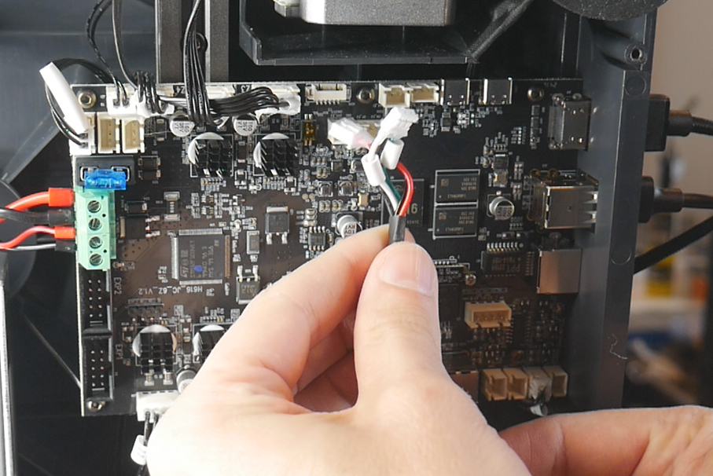Turn the printer on. In the web interface, Klipper will give an error about the tool MCU not being found. This is expected and can be ignored.
Now connect via SSH and send the following command:
ls /dev/serial/by-id*
The serial ID for the mainboard will be returned. For example, mine is /dev/serial/by-id/usb-Klipper_stm32f103xe_30FFD4053347543034871651-if00
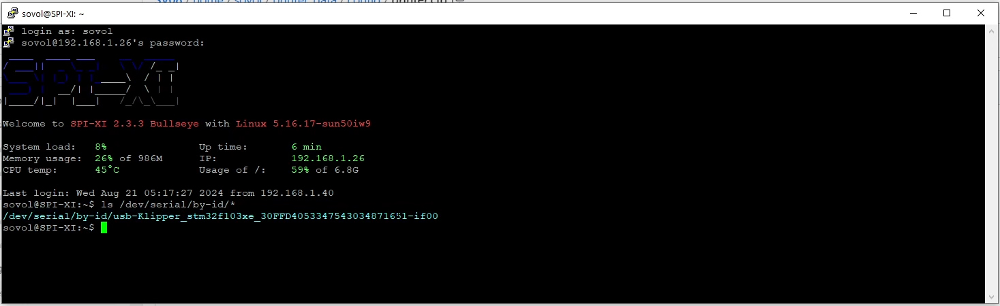Copy and paste this into your text file under the heading mainboard.
Power down the printer, re-connect the JST connectors to the mainboard and power up once more. Connect via SSH and run the same command. This time, two serial IDs will be returned: the mainboard and the default tool. Determine which of these is new/distinct, then copy and paste it to your text file under the heading tool 0. Label tool 0 with a sharpie or tape accordingly.
 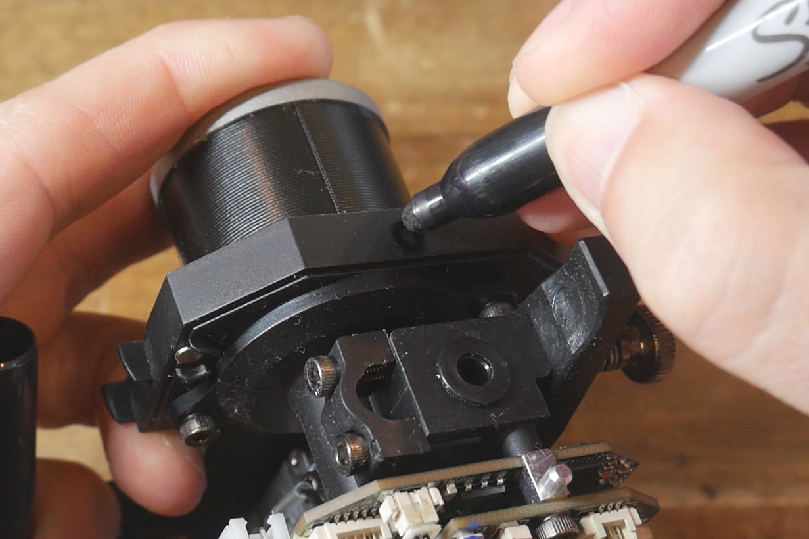
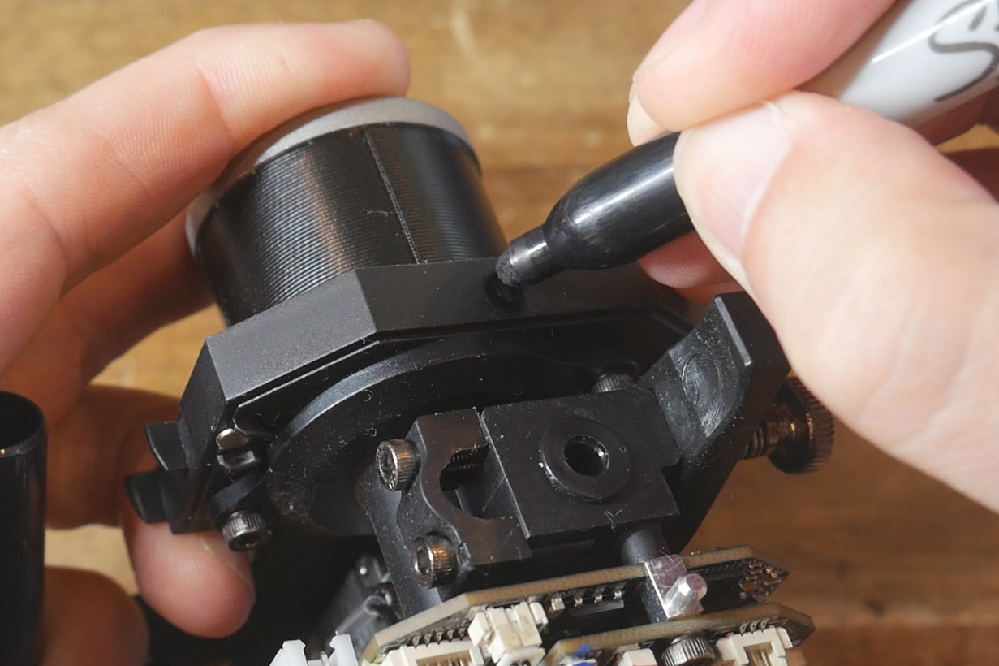
Power down the printer, and this time disconnect the JST plugs from tool 0, before connecting them to the first of your additional tools.
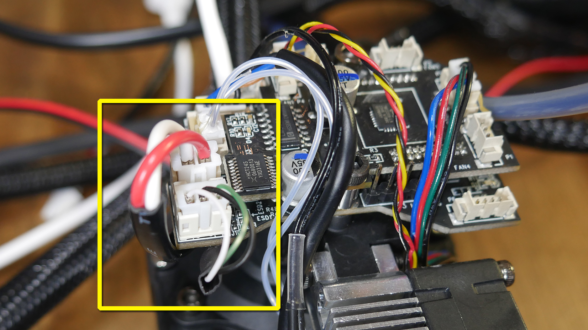Connect via SSH and retrieve the serial ID again. The mainboard will again be listed with a new tool serial ID. Copy this to your text file under the heading tool 1. Label tool 1 accordingly.
Power down the printer, disconnect the current tool, connect the next and repeat the process until you have the serial IDs of all of your tools. Label the physical tools to match.
If you power down the printer and connect back the original tool and power up, any Klipper errors should be gone and the printer should be back to working order.
Power Supply Replacement
This tab covers upgrading the PSU to handle up to six tools instead of just one.
The relevant section of the video is here:
This step requires dealing with mains voltage wiring, which has the potential to kill. This is not for beginners. Please consult a professional before attempting these procedures. Ensure the printer is powered off and the power isolated before touching any items concerning the PSU.
Rationale
The SV08 has a mains AC powered heated bed, therefore the factory power supply only needs to supply current to the mainboard, one tool and some extras like sensors and LEDs. Consequenmtly it is small and low powered. In order to accommodate up to five additional tools, the PSU needs upgrading to potentially power up to six tools at once.
BOM
The following hardware is required:
| Item | Quantity | Link | Affiliate? | Notes |
|---|---|---|---|---|
| Meanwell LRS-350-24V | 1 | Amazon | TT | |
| M4 x 8mm SHCS bolts | 8 | Four to mount the PSU in the adaptor. Four with T nuts to attch the adaptor and safety cover to the 2020 extrusion. | ||
| M4 T nuts | 4 | |||
| Blue spade crimp connector | 6 | Amazon | TT | Much larger multi-pack. Use a smaller, cheaper option if desired. |
| 10 awg wire | 3 x ~450mm | Amazon | TT | Minimum 10 gauge thickness for safety. Three lengths required for active, neutral and ground in differet colours. Alternatively, tape or heat shrink can be used to add colour. You can also retrieve mains gauge wire from an unwanted mains power cord. |
Printed Parts
| Item | Quantity | Notes |
|---|---|---|
| PSU - adaptor | 1 | |
| PSU - terminal cover | 1 | Brim may be required depending on bed adhesion. |
Old PSU removal
With the machine powered off and the power cable isolated (removed), take off the bottom cover of the printer. A series of self tapping screws are used here.
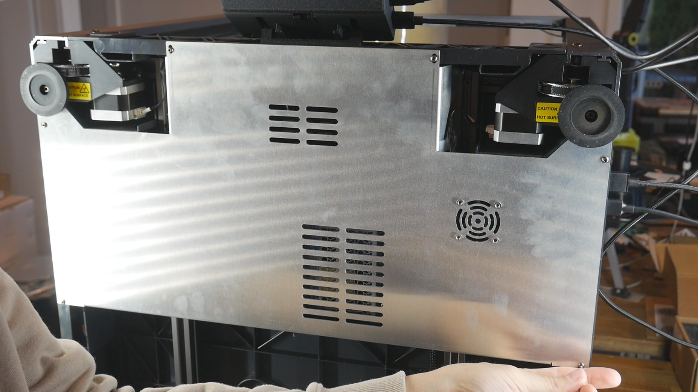Remove the screws holding the clear cover over the old PSU. Now undo the terminals of the PSU to release the wires going in and out. Finally undo the screws holding the PSU itself.
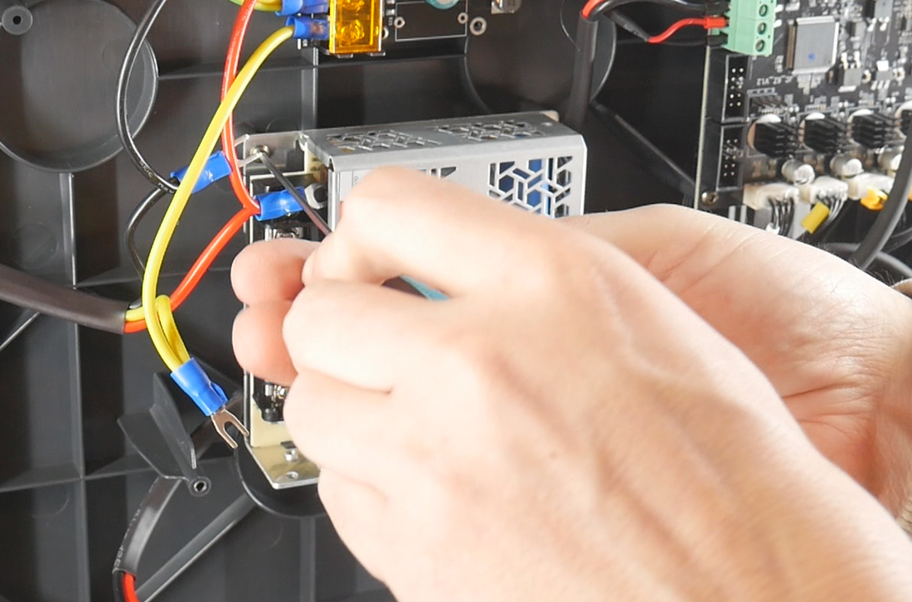Trim the two circled plastic protrusions below the height of the mounting bosses near them.
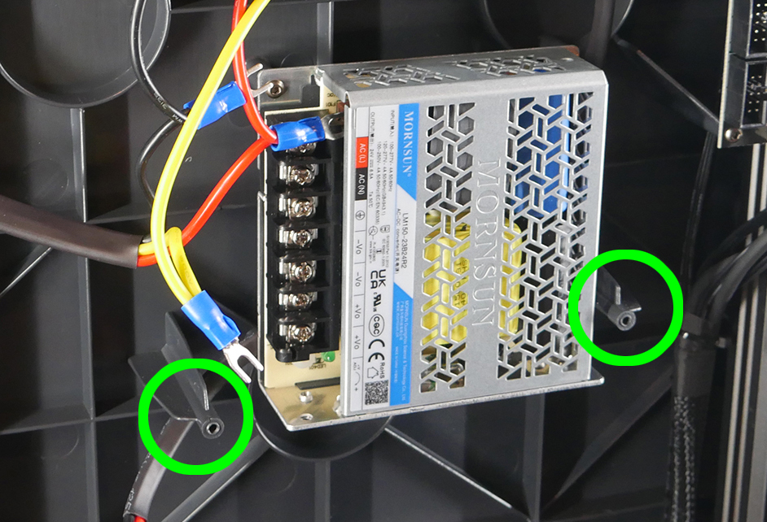 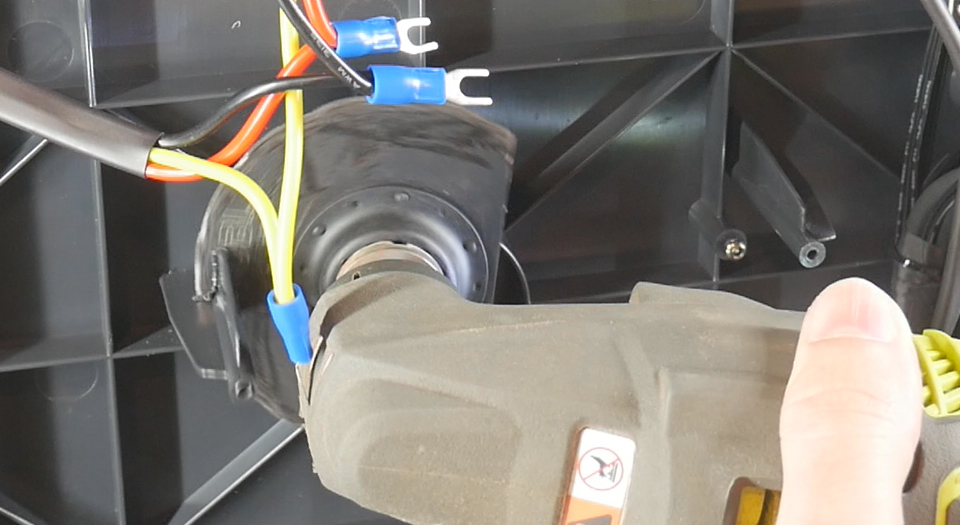 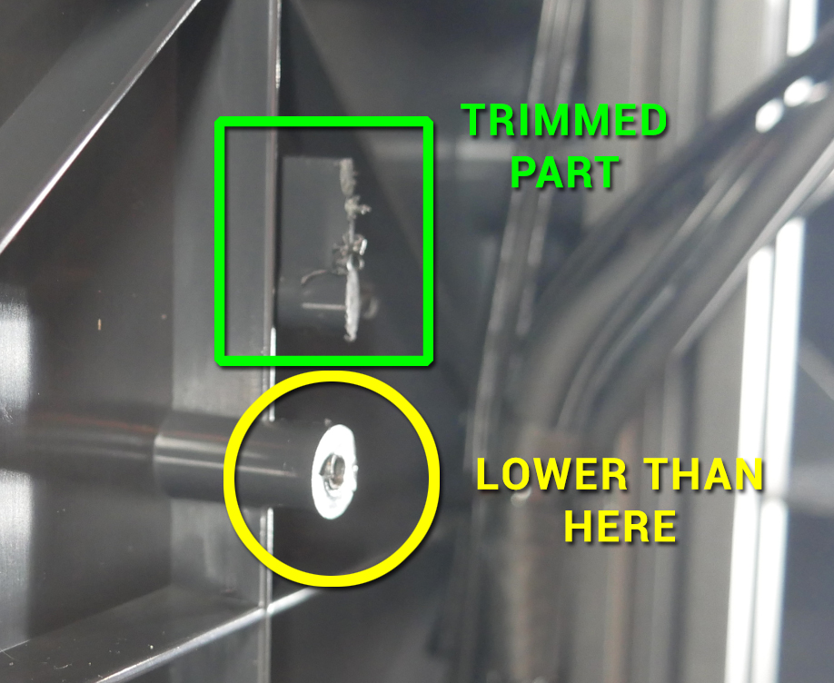Mounting the larger PSU
Prepare the PSU adaptor by placing two M4x8mm bolts and T nuts in the left hand holes.
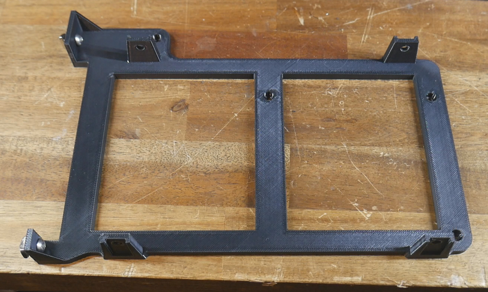Slide the adaptor into position so that the T nuts go into the 2020 extrusion on the left. Position the adaptor so that the mounting holes line up with those in the underside of the printer. Use the self tapping screws that previously held the old PSU and cover to secure the daptor. Tighten the M4 bolts/T nuts to secure the adaptor to the 2020 extrusion on the left.
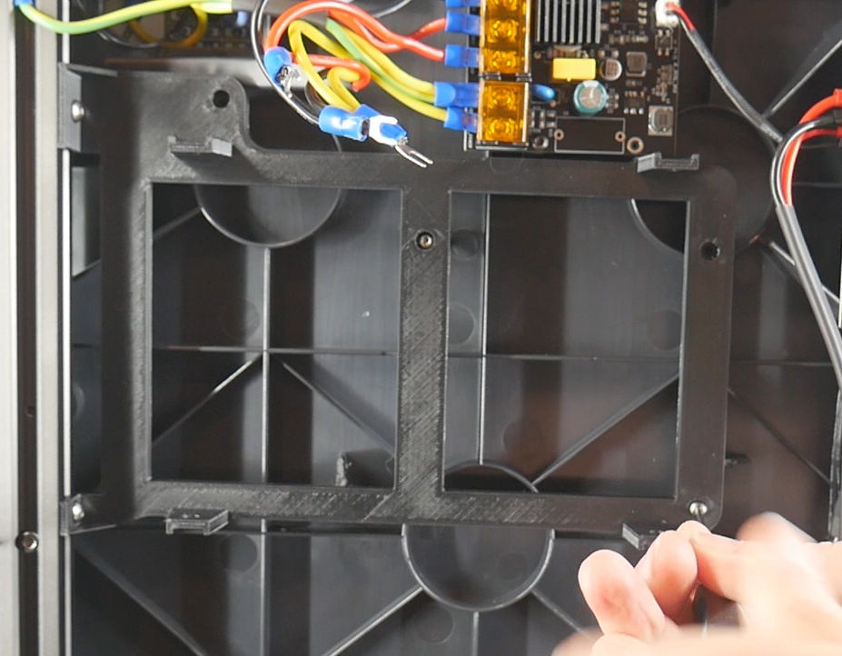Slide the new PSU into the adaptor and use four M4x8mm bolts to secure it in place.
Bolts longer than 8mm must not be used here as they may extend into the inside of the PSU and create a safety hazard.
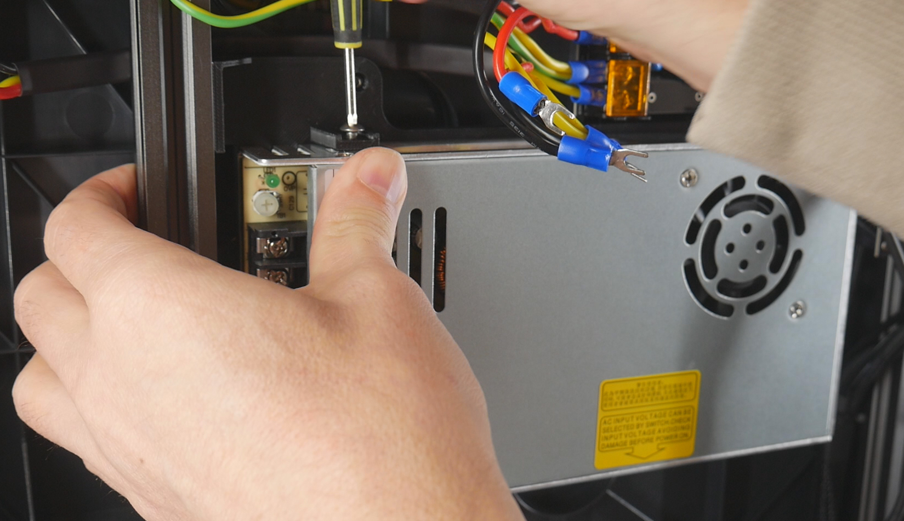Rewiring
Install the existing 24V wires from the mainboard into the 24V output terminals of the new PSU.
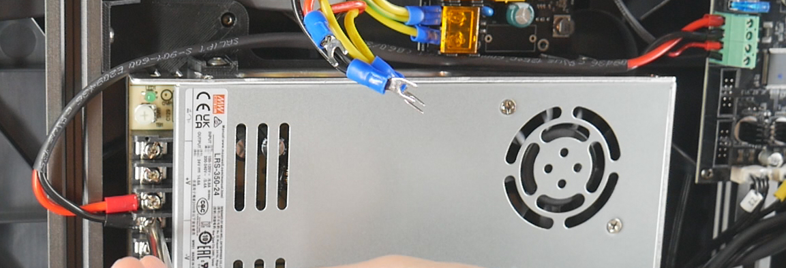Disconnect the mains wires from the bed heater board (red, black and yellow/green). Feed the ends of these wires back to the left near where the mains power input is.
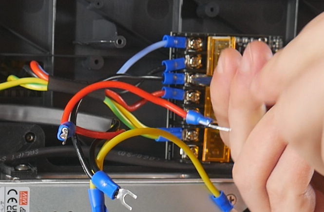 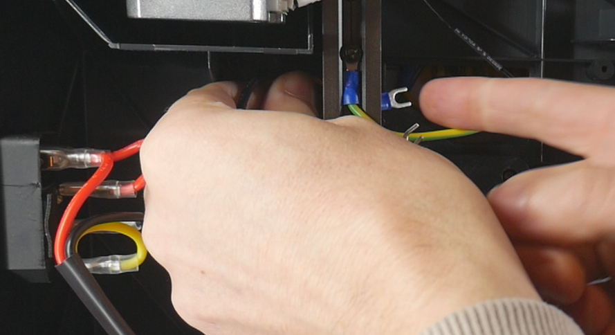Position the cable near the PSU mains input terminal, and cut off the old spade connectors and strip back the insulation.
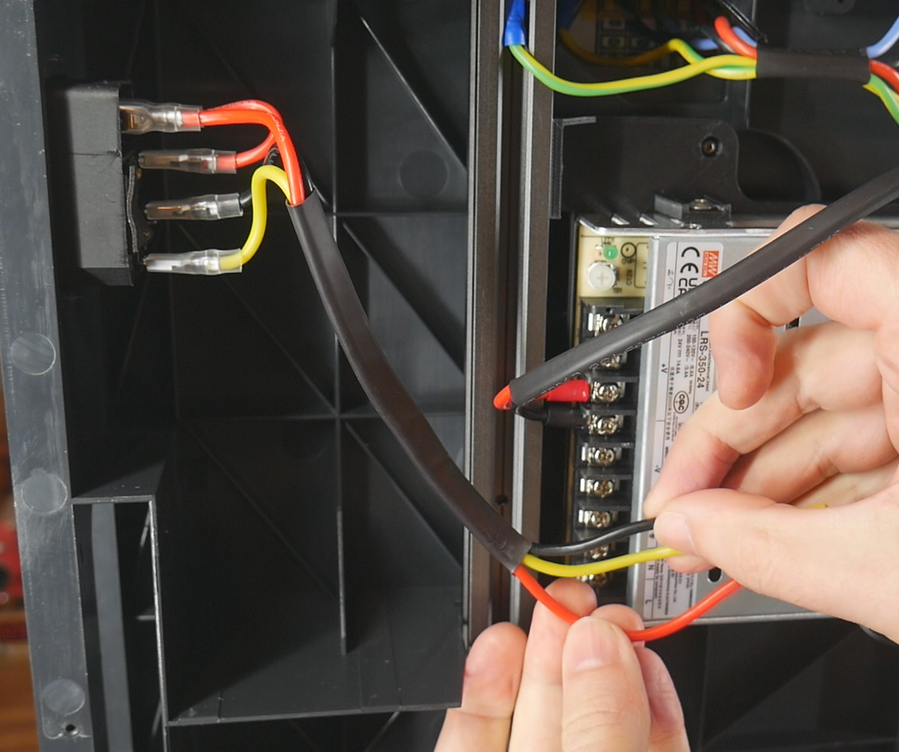For each of the three mains wires, crimp on new spade connectors to suit the new PSU terminals, but with an approximately 450mm length of new cable daisy chaining off. This new segment will travel up to the bed heater board. Trim the daisy chained wire to suit and crimp on a spade connector. Attach the spade connectors to the terminals of the PSU and bed heater board.

Repeat this same process for the two other mains wires. Protect the three mains wires between the PSU and bed heater board with some sheathing and/or tape.
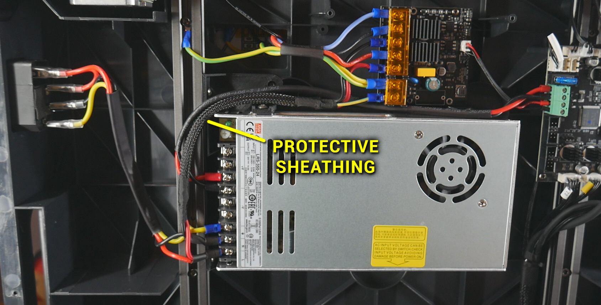Safety Cover
Prepare the terminal cover with two M4x8mm bolts and T nuts.
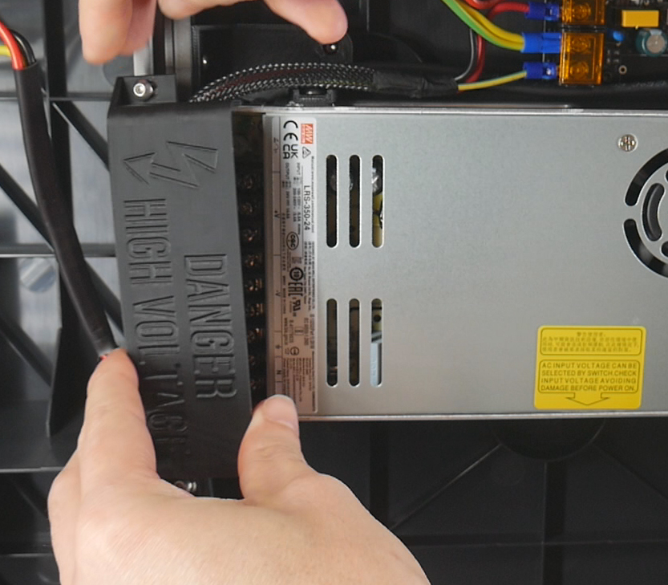Mount the cover on the 2020 extrusion so that it blocks the PSU terminals. Install the bottom cover back on the machine.
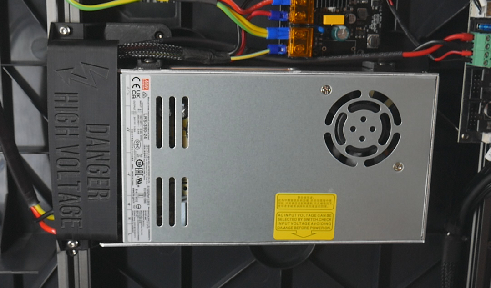Birds' Nest USB Hub
This tab covers adding a Bird's Nest USB hub by Isik's Tech. This is a Klipper compatible, easy to use expansion part that allows us to have up to six tools with only power and USB connections back to the mainboard.
The relevant section of the video is here:
Rationale
The SV08 uses USB connections (instead of CANbus) for its tools. The mainboard has two USB ports plus a JST set of connectors (used by default for tool 0). The webcam uses one USB port, meaning without expansion we would be limited to a two tool build. the Birds' Nest allows up to six tools, whilst only requiring a single USB port. It also have its own Klipper compatible MCU and IO pins, meaning we can add filament runout sensors and other hardware if desired.
In part 2 of the original video series, I initially tried a cheap USB hub. This was limited to four tools max and offered none of the other benefits of the Birds' Nest. It is still possible to use something like this but the Birds' Nest is vastly superior.
BOM
The following hardware is required:
| Item | Quantity | Link | Affiliate? | Notes |
|---|---|---|---|---|
| Birds' Nest USB hub | 1 | GitHub | Purchase links for various regions found on GitHub. Purchase of bundled USB-C cable recommended. | |
| M3 x 5 x 4 threaded inserts (Voron spec) | 6 | CNC Kitchen | ||
| M3 x 8mm bolts | 6 | Two to mount the board to the fannypack base. Four to join the fanny pack base to the extrusion adaptor. | ||
| 6 x 3mm N52 magnets | 8 | US KB-3D UK Printy Please |
DS DS |
Four each for fannypack base and cover. |
| Ferrule/bootlace crimp connector | 2 | Amazon | TT | Pack plus crimper. Pack only neccessary if you have none of these or a tool. |
| Blue spade crimp connector | 2 | Amazon | TT | Much larger multi-pack. Use a smaller, cheaper option if desired. |
| 12 AWG twin core cable | Approximately 1m | Amazon | TT | Can use thicker cable if that's all you have. Too thick and routing will be difficult. |
Printed Parts
Source CAD: Onshape
| Item | Quantity | Notes |
|---|---|---|
| birdsnest - extrusion adaptor | 1 | Must be printed on its end as positioned to avoid support material. |
| birdsnest - fannypack base | 1 | Remixed from ManCheetah's files |
| birdsnest - fannypack cover | 1 | Remixed from ManCheetah's files |
Printed Parts Preparation
Six M3 heat sets need to be melted into place. There are four in the extrusion adaptor and two in the fannypack base.
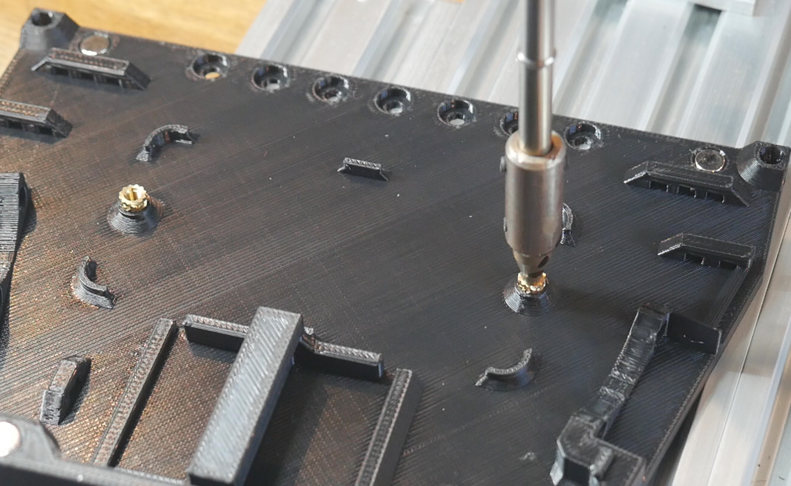 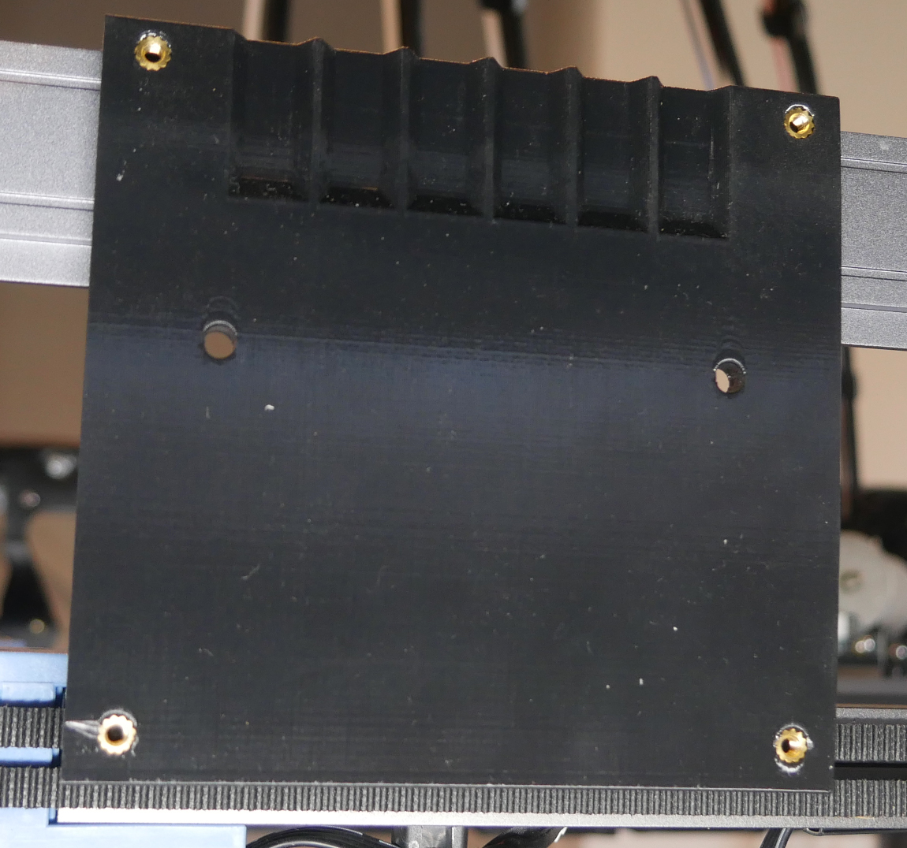Eight magnets need to be inserted into the fannypack parts. Four go in each side and the magnets need to be matched so that they attract each other. Depending on how tight the fit is, you may need a small bit of super glue to retain them.
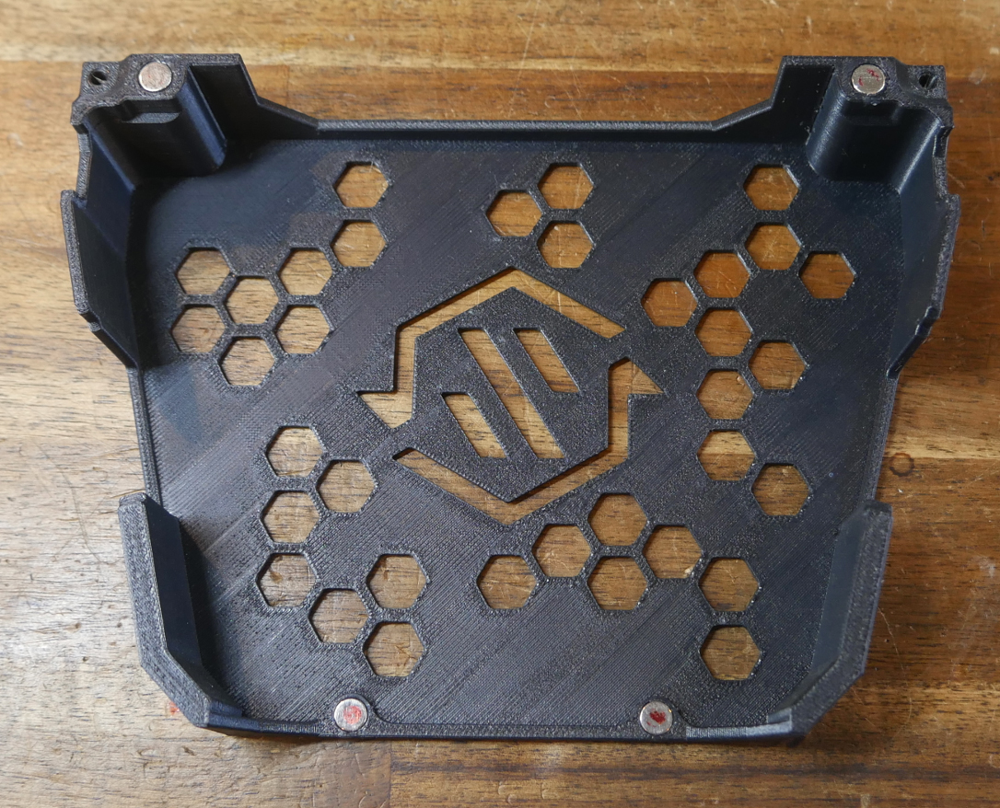Mounting
Secure the Birds' nest board to the fannypack base using two M3 x 8mm bolts. Secure the fannypack base to the extrusion adaptor using four M3 x 8mm bolts.
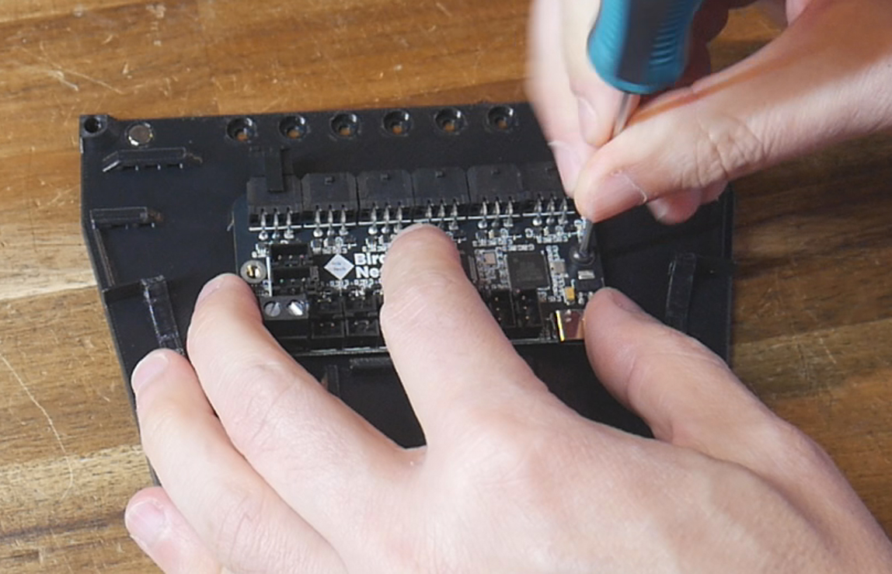
At the upper rear left of the frame, remove the two M3 bolts holding the horizontal bar to the corner. Flex the horizontal bar backwards and slide the extrusion adaptor/fannypack base assembly onto the extrusion and into the centre.
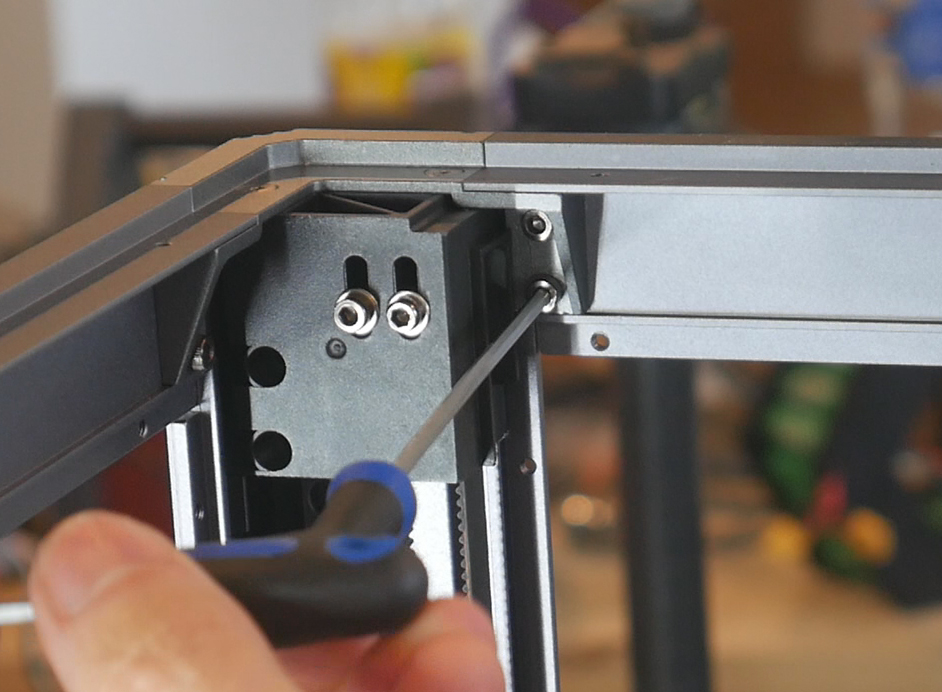 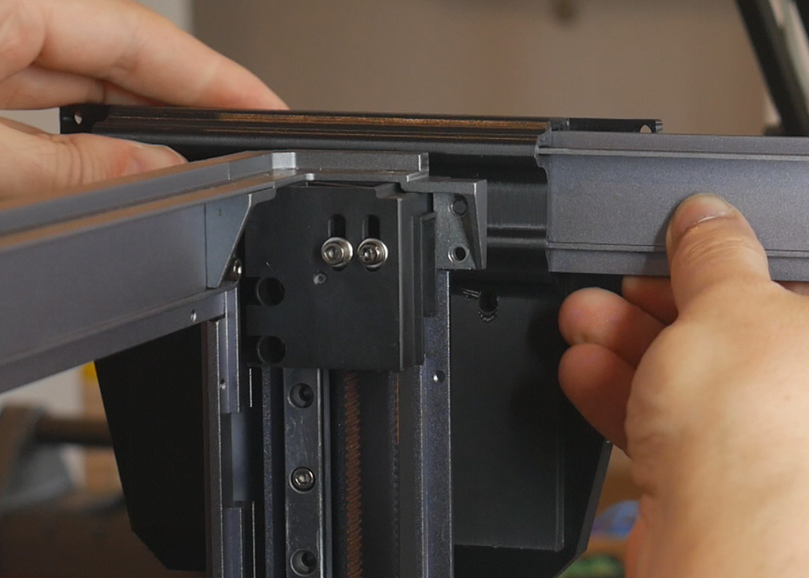 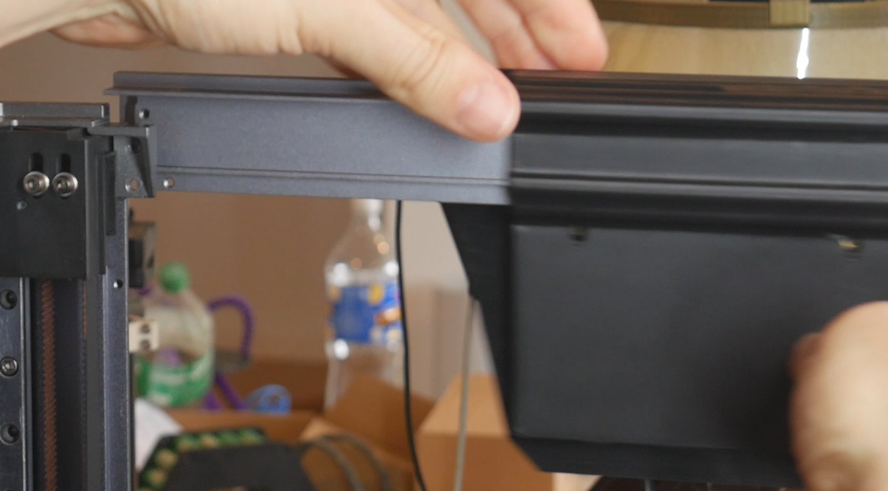Wiring
Wiring for the Birds' Nest is very simple. We need to supply 24V and grond, plus a USB cable.
Cut a length of two core 12awg cable to approximately 1m in length. This may be shortened later on but 1m is a good starting value. On one end, crimp a set of blue spade connectors and secure into the 24V output terminals on the PSU.
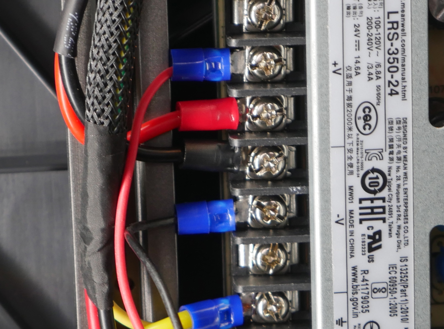The other end recives two ferrule/boot lace connectors suitable for the screw terminals on the Birds' nest board.
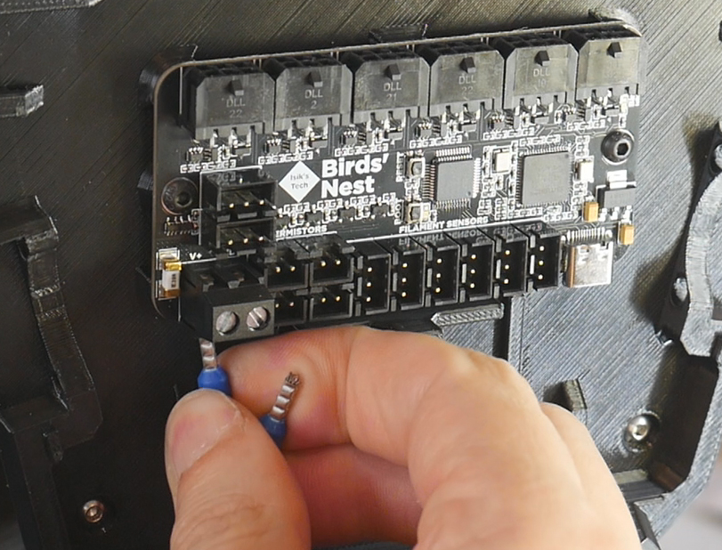If you ordered the USB-A to USB-C cable with the Birds' Nest, the other half on the wiring is already done. This cable goes between the spar USB-A port on the mainboard to the USB-C port on the Birds' Nest.
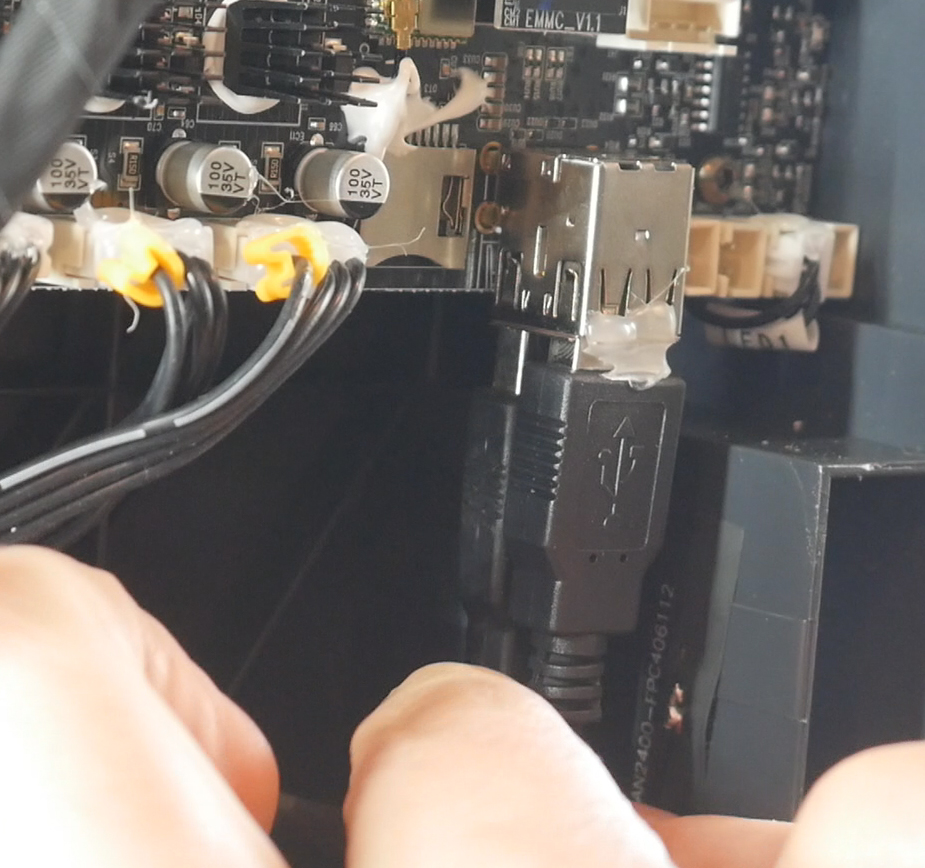 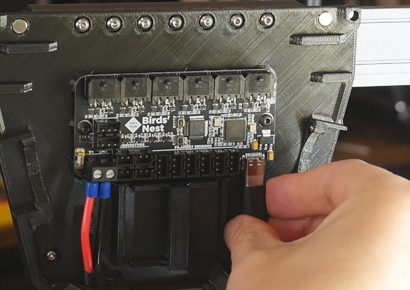Cable Routing
Protect the cables with sheathing or a similar product.
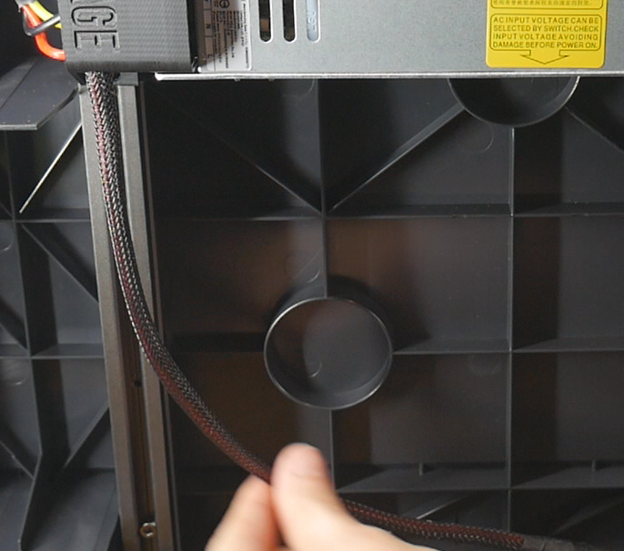There is a opening behind the bed where some cables already pass through. A plastic cap that seals this can be removed to faciliate feeding the two Birds' nest cables through. I would recommend Unplugging the cable for tool 0 that already passes through here and separating it from the rest. It can be temporarily routed elsewhere if you are unwilling to take the printer offline. Feed the Birds' Nest cables from below, through this opening, and press the plastic cap back on.
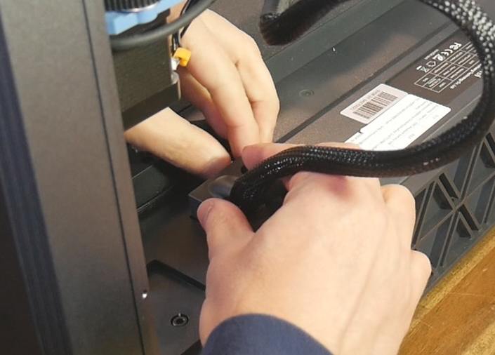 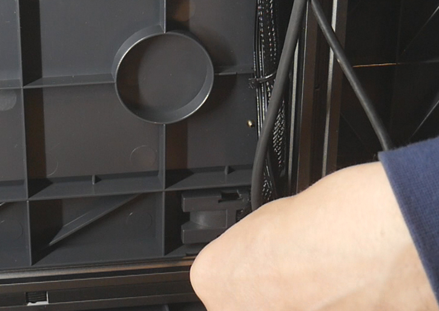 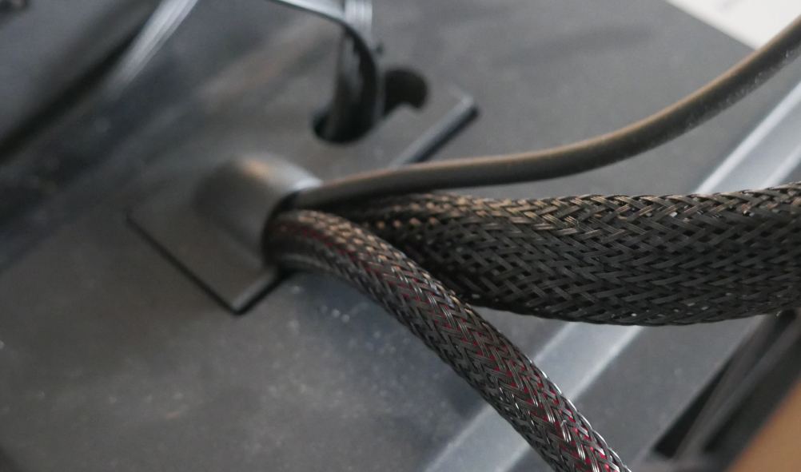Birds' Nest Firmware
For this section, it's best to refer to the Birds' Nest Manual for the most up to date information.
If you have purchased your board from Isik's Tech, the section on nBOOT_sel can be skipped.
Klipper firmware must be compiled and installed on the board in any case, however. Follow the steps in the manual to SSH into the pi, compile Klipper using the correct settings for the board, and then flash the firmware. The image below is for reference only, please follow the exact instructions from the manual.
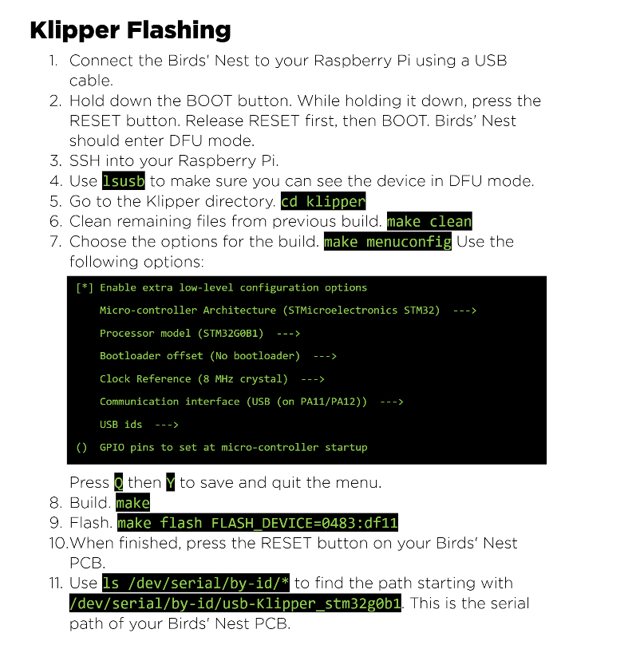As we did in the preparation step, we need to collect the serial ID of the Birds' Nest board to add to our text file. SSH in to the pi and run the same command as previously:
ls /dev/serial/by-id*
Look for an entry that starts with STM32G0B1 (all of the previous results started with STM32F103). Copy and paste this to complete your text file.
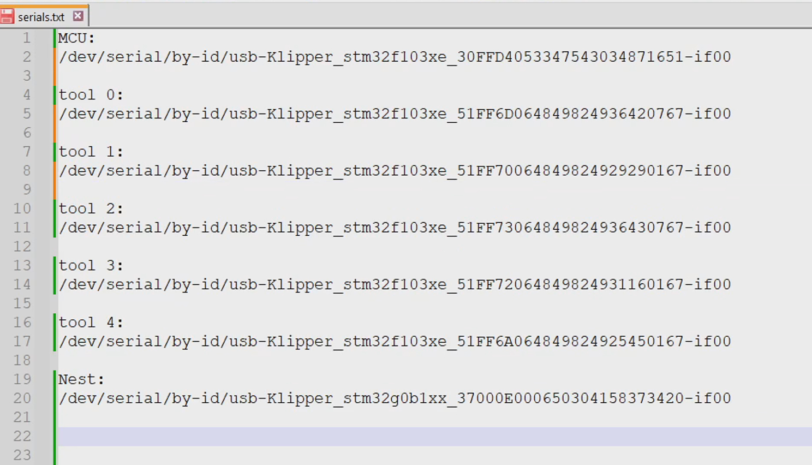Klipper Configuration
The Birds' Nest manual outlines steps to download a configuration file as part of your Klipper config. We will skip this step, because the pre-prepared SD card image already has all of the config files in place. Later in the process, we will simply enter our own serial IDs into the config files.
Modular Docks
This tab covers adding a modular dock to the front of the SV08, where the tools not in use are parked. The printed parts were designed by DraftShift as a variation on their Stealthchanger Modular Dock. This means that if you decide to use a different ttol design, there will hopefully be a dock to suit.
The relevant section of the video is here:
Rationale
The SV08 is released as a single tool printer. When converted to a toolchanger, additional tools are fitted and need a place to be stored when not in use. This dock connects to an added piece of 2020 extrusion, as well as the existing extrusions at the top of the SV08 frame.
Unless you are extremely tight for filament or parts, I would recommend printing and assembling this dock in a six tool configuration, even if you are using five or less tools. This is because the six tools dock fills the entire width of the printer. Not using it will require spacers and other solutions to fill the width. A six tool dock also allows much easier addition of more tools at a later date.
The SV08 dock is split into three sections. Firstly, the dock bar, which is the common frame that interfaces with the printer. Secondly, the individual docks, of which I recommend you produce six sets. Finally, the links, which are added after the docks and help keep the docks correctly spaced and positioned.
BOM
The following hardware is required:
| Item | Quantity | Link | Affiliate? | Notes |
|---|---|---|---|---|
| Dock bar | ||||
| 2020 extrusion | 1 x 420mm | Amazon | Extrusion needs to be cut down to length. A electric drop saw meant for timber will cut alumnium nicely in small doses. Otherwise, some local suppliers will supply pieces cut to length for a fee. If you don't have spare extrusion on hand, shop around locally to save money. | |
| M3 x 5 x 4 threaded inserts (Voron spec) | 4 | CNC Kitchen | ||
| M3 x 10mm SHCS bolts | 4 | Replace factory M3 x 8mm bolts where 2020 brackets and main brackets are installed. | ||
| M3 x 12mm BHCS bolts | 6 | One per 2020 bracket through heat sets. Two per side through main brackets and round spacers into outer dock pieces. | ||
| M3 x 35mm SHCS bolts | 2 | Through main bracket, isolator, rectangular spacer and into side bracket on each side. | ||
| Docks - Quantities are per dock | ||||
| M3 x 5 x 4 threaded inserts (Voron spec) | 24 per dock + 4 additional | CNC Kitchen | ||
| M3 x 16mm SHCS bolts | 4 | Top and bottom to front frame. | ||
| M3 x 50mm SHCS bolts | 2 | Base to bottom frame. | ||
| M3 x 20mm SHCS bolts | 2 | Base to bottom frame. | ||
| M3 x 10mm SHCS bolts | 2 | Back plate to base. | ||
| M3 x 16mm BHCS bolts | 1 | Blocker body to blocker cup. | ||
| M4 spring | 1 | Between blocker body to blocker cup. Can use trimmed down ball point pen spring or similar. | ||
| High temperature RTV silicone | 1 tube | Amazon | TT | To fill each blocker cup. Use simple method demonstrated in my video or seek further guidance from DraftShift. |
| M3 x 30mm SHCS bolts | 4 | Base to blocker body. | ||
| 4mm OD PTFE tube | 8mm length | PTFE wiper. This is the regular size of tube used commonly in 3D printers. | ||
| M3 x 6mm FHCS bolt | 1 | Holds PTFE tube to wiper. | ||
| M3 x 6mm BHCS bolt | 1 | Wiper to blocker body. | ||
| M3 x 8mm BHCS bolt | 2 | L bracket to frame top. | ||
| M3 x 8mm SHCS bolt | 4 | Face spacers to front frames. | ||
| M5 x 10mm BHCS bolt | 4 | Dock to 2020 extrusion. | ||
| M5 T nutst | 4 | Dock to 2020 extrusion. | ||
| Links - Quantities are per dock | ||||
| M5 x 10mm BHCS bolts | 2 | Dock to guide links (centre, left and right). | ||
| M5 lock nuts | 2 | Dock to guide links (centre, left and right). | ||
| M3 x 6mm BHCS bolt | 2 | Dock to rear link. | ||
Printed Parts
Source CAD: Onshape
Please note that some right hand parts were missing in the source CAD. I simply mirrored the left side part in CAD to export for the list below.
All left and right labels apply when looking from the front of the printer towards the back.
| Item | Quantity | Notes | ||
|---|---|---|---|---|
| Dock bar | ||||
| dockbar - 2020 bracket left | 1 | Includes built in removable support structures. No support needed. | ||
| dockbar - 2020 bracket right | 1 | Includes built in removable support structures. No support needed. | ||
| dockbar - side bracket left | 1 | |||
| dockbar - side bracket right | 1 | |||
| dockbar - main bracket left | 1 | |||
| dockbar - main bracket right | 1 | |||
| dockbar - round spacer | 4 | |||
| dockbar - rectangular spacer | 2 | |||
| dockbar - left isolator | 2 | |||
| dockbar - right isolator | 2 | |||
| dockbar - stabilizer | 4 | Use a brim if bed adhesion is poor. | ||
| Docks - Quantities are per dock | ||||
| docks - front frame left | 1 | |||
| docks - front frame right | 1 | |||
| docks - top frame | 1 | |||
| docks - bottom frame | 1 | |||
| docks - L bracket | 1 | |||
| docks - face spacer left | 1 | |||
| docks - face spacer right | 1 | |||
| docks - base | 1 | |||
| docks - back plate | 1 | |||
| docks - blocker body | 1 | |||
| docks - blocker cup | 1 | |||
| docks - ptfe wiper | 1 | |||
| Links | ||||
| links - rear link | 5 | |||
| links - guide link centre | 5 | Variation on DraftShift link to suit the SV08. Heads hold the tools square in the dock. | ||
| links - guide link left | 1 | Variation on DraftShift link to suit the SV08. Heads hold the tools square in the dock. | ||
| links - guide link right | 1 | Variation on DraftShift link to suit the SV08. Heads hold the tools square in the dock. | ||
| linkss - 7mm dock spacer | 2 | An optional part to assist in spacing the docks squarely 7mm apart. | ||
Assembly Manual
An excellent resource is available for this step of the build in the StealthChanger ModularDock Assembly Guide. Although there are some variations in parts to suit the SV08, most of the manual applies and is easy to follow.
Printed Parts Preparation
The 2020 brackets have two pieces of support structure to remove.
There are many heat insets to be installed. Four are required for dockbar parts (one in each 2020 bracket and one in each side bracket). There are twenty four heat sets per dock. Most of these are in the assembly manual, but some are less obvious.
In each dock, there are two in the underside of the base piece:
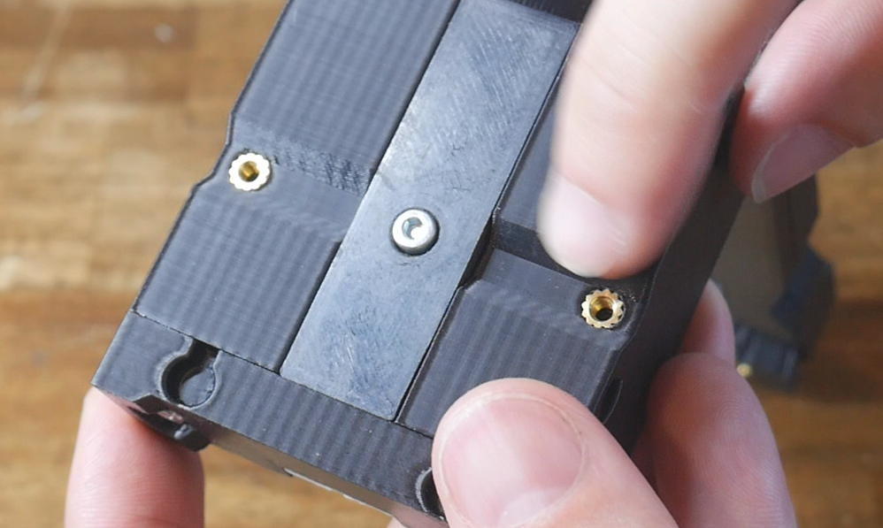Four more heat sets are uses in the face spacer pieces:
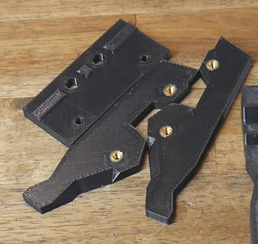The outer two docks geta pair of heat sets that will later attach to the large brackets of the dock bar.
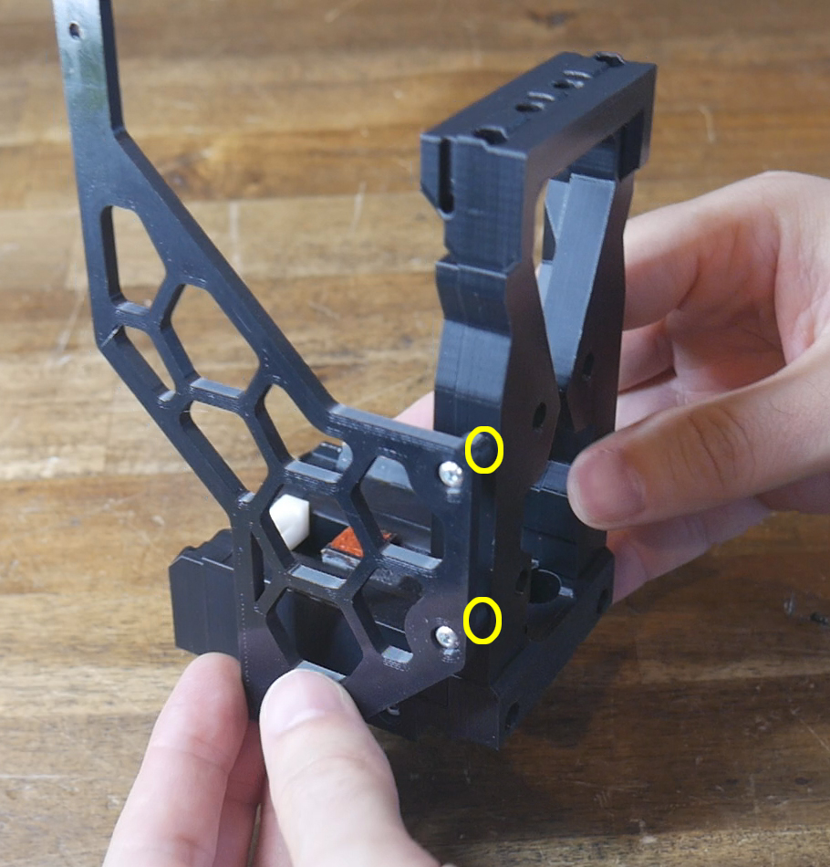Dockbar Installation
We will start by installing the majority of the dock bar with the 2020 extrusion piece.
Remove the factory M3 x 8mm bolts holding the SOVOL branded top frame piece to the printer. Remove this frame piece and then remove the LED bar from it.
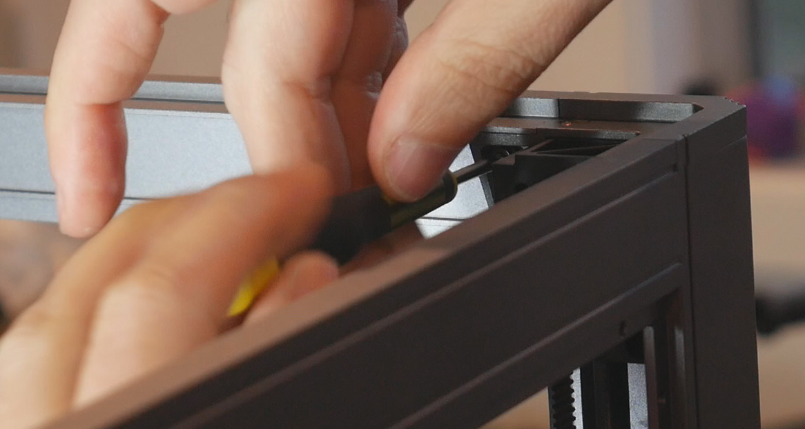 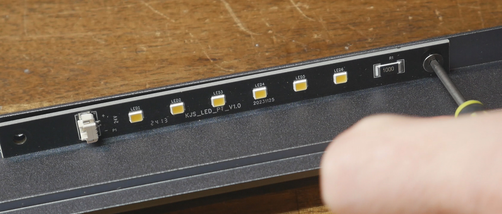Slide four stabilizer pieces along the front edge of the 2020. These will reduce wobble later. Install the 2020 brackets on the outer edges of the 2020 extrusion. M3 x 12mm bolts can be used in the 2020 brackets to lock them against the extrusion.
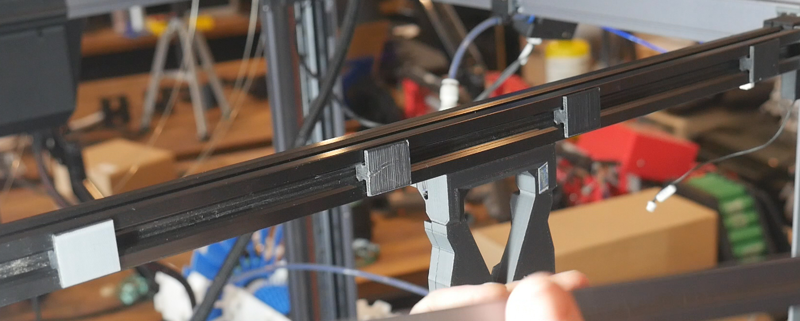 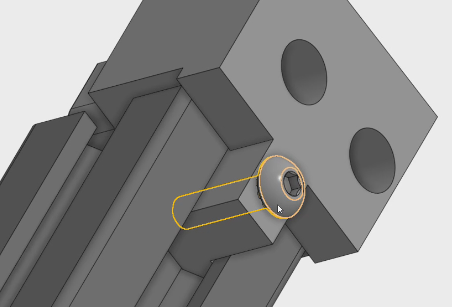Insert the 2020 assembly behind the upper SOVOL frame piece of the printer. Use two M3 x 10mm bolts on each side to secure the assembly to the frame. The 2020 which forms the structure for the dock bar is now finished.
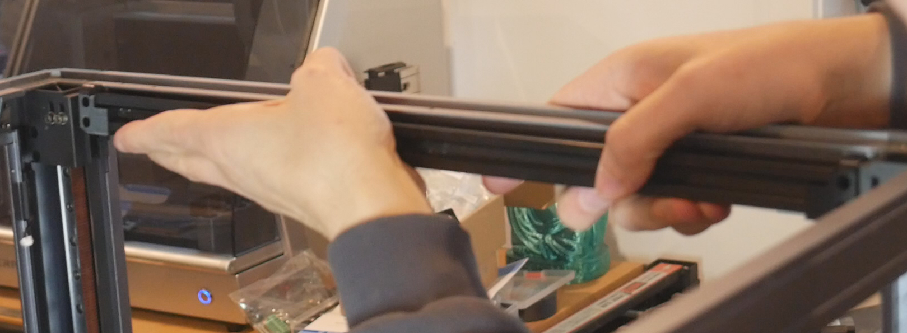 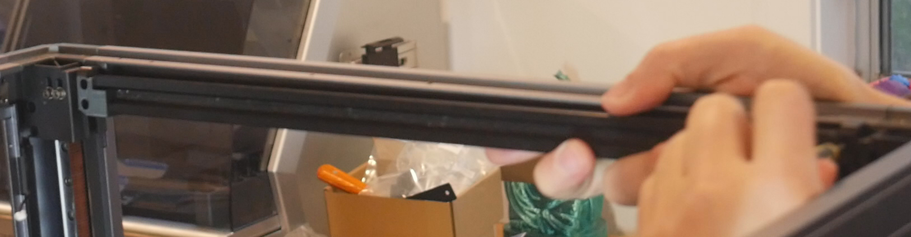The side brackets attach in the same way. Remove the two factory M3 bolts holding the frame extrusion, place the side bracket over the top and use two M3 x 10mm bolts to hold everything together.
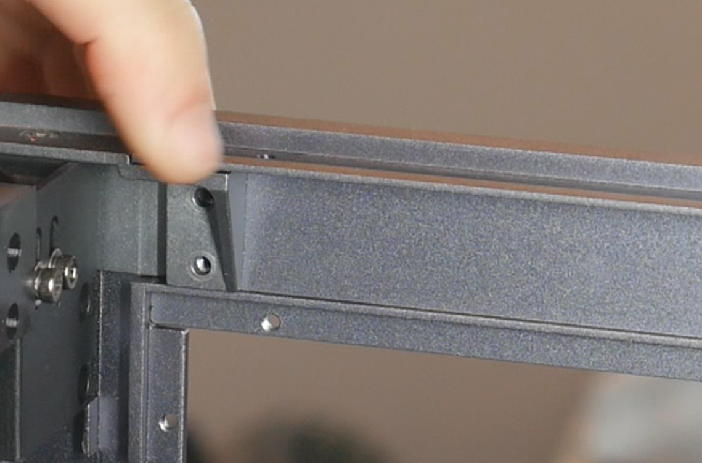 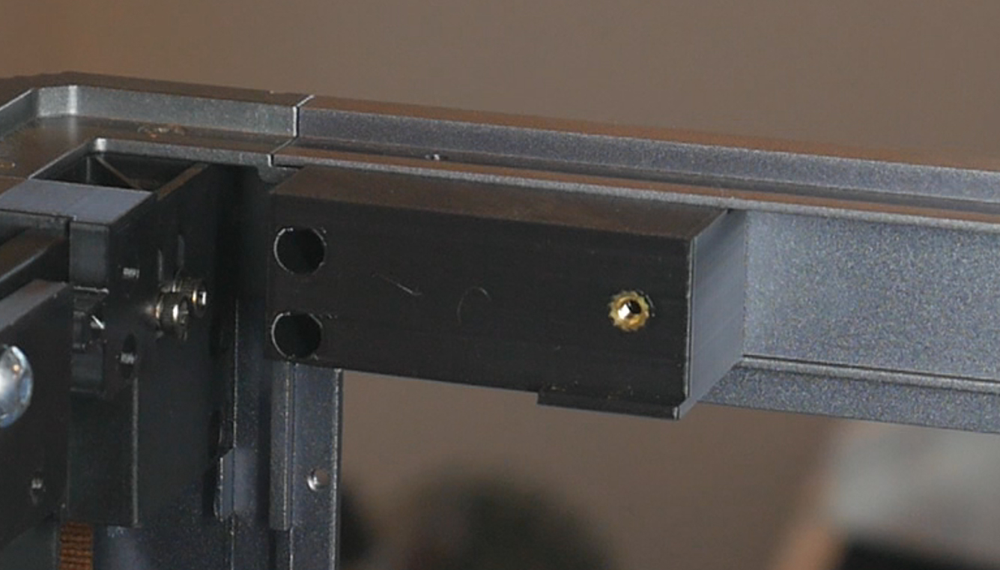Docks Assembly
From here, the DratShift manual is the best resource. The BOM above also details where each nut and bolt is used. Simply follow the steps to assemble six docks. This sequence also includes moulding RTV silicone into the blocker cup. Remember to select the two docks which will sit on the far left and far right. These should have previously had heat sets melted into the outer edges.
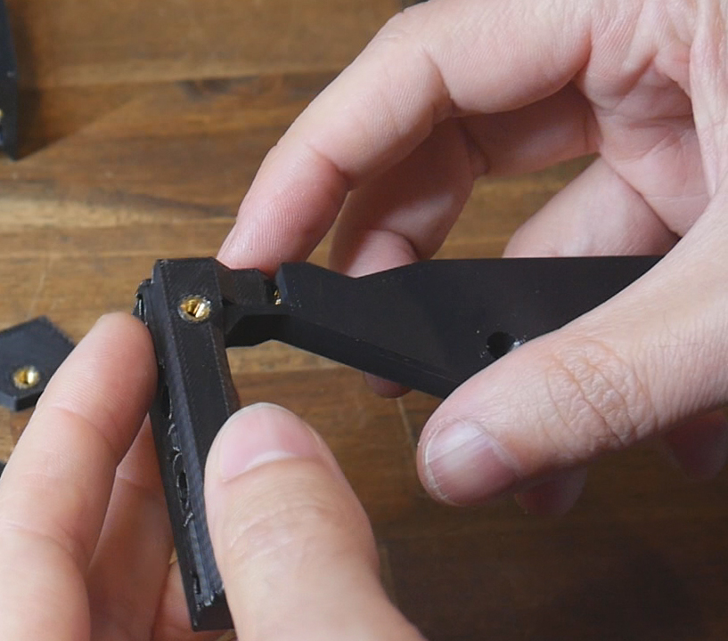 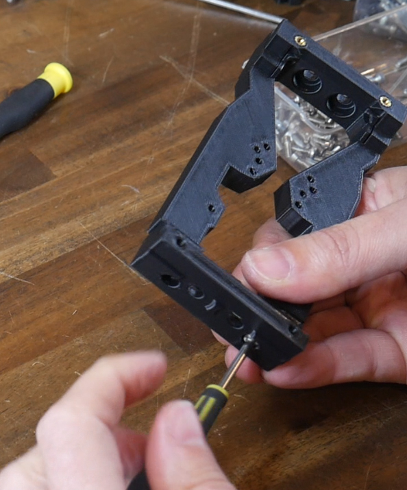 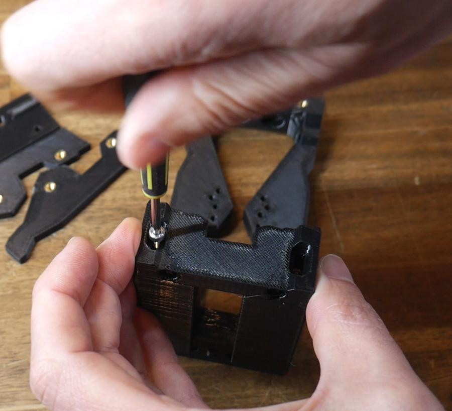Adding Docks to the Dock Bar
Install the corner docks first. The large bracket attached to them should line up with the side bracket, with the isolator and rectangular spacer inbetween. An M3 x 25mm bolt in each side secures the parts together.
I recommend temporarily removing the L bracket from the top of each dock, then securing the top of the dock to the underside of the 2020 extrusion with M5 x 10mm bolts and T nuts. Then reattach the L brackets with M5 bolts and T nuts in place. Once everything is tightened each dock should be secure.
Use the 7mm spacer to assist in installing the centre four docks in the right position. Using two spacers at the same time will help align the top and bottom of each dock.
Adding Links
The final components are the links. These hold the docks in place with the correct spacing and add rigidity. The SV08 specific guide links also help hold the tools squarely when docked. Four centre links are needed and a bespoke left and right version on the sides. M5 x 10mm bolts go through the bottom frame piece of the dock and go into trappen M5 locknuts in the guide links.

The rear links install on the underside, with a pair of M3 x 6mm bolts holding each.
Spool Holder
This tab covers upgrading adding a modular spool holder to either the front or back of the printer.
The relevant section of the video is here:
Rationale
The SV08 has a single spool holder to suit the single tool. Our toolchanger conversion requires a solution that holds up to six spools for up to six tools.
Unlike the modular dock, where i recommend building a six dock system in every case, this part of the build can be scaled to suit the number of tools. The underlying frame spans the printer and additional spool holders can be added conveniently at a later time. The frame has enough rigidity regardless of how many spool holders are fitted.
BOM
The following hardware is required. BOM is divided into common, front mount and rear mount sections.
| Item | Quantity | Link | Affiliate? | Notes |
|---|---|---|---|---|
| Common | ||||
| 2020 extrusion | 2 x 500mm | Amazon | TT | This Amazon listing contains enough 2020 pieces to suit the spool holder and previous dock bar. However, they would need to be cut down to the 500mm length. If this is difficult for you, shop around for a listing with 2020 already 500mm in length. If possible, the bores of the extrusions should be tapped to make an M5 thread. The system will work without this but not be quite as strong. |
| 608RS bearings | 4 per spool holder | Amazon | TT | |
| Reverse bowden PTFE tube | 1 x 900mm length per spool holder | Amazon | TT | 900mm is the base length, but the tools in the middle can have the tube trimmed down slightly to reduce clutter. This tube has a larger internal diameter than regular PTFE tube to reduce friction. If you want to save money because you have enough regular PTFE tube in stock, please do so. |
| BTT Smart Filament Sensor V2.0 | 1 per spool holder | Amazon | TT | M3 hardware included with SMS will be used to attach sensor to sensor mount. |
| M3 x 5 x 4 threaded inserts (Voron spec) | 2 per spool holder | CNC Kitchen | One per span bracket, melted into the flat side of the larger hole. | |
| M5 x 8mm BHCS bolts | 4 (+4 if you are able to add M5 thread the 2020 bores). | Front/rear mount bracket to 2020 extrusion. | ||
| M5 T nuts | 4 | Front/rear mount bracket to 2020 extrusion. | ||
| M5 x 8mm BHCS bolts (again) | 2 per spool holder | Sensor mount to 2020 extrusion. | ||
| M3 x 8mm BHCS bolts | 2 per spool holder | Joins span brackets back to back. | ||
| M5 x 8mm BHCS bolts (again again) | 4 per spool holder | Span bracket to 2020 extrusion. Can use less to save parts. I used 14 in total for six spool holders. | ||
| JST XH connector kit | 6 - 10 | Amazon | TT | Optional but recommended to shorten filament sensor wires. |
| Front mounted spool holder | ||||
| M3 x 10mm BHCS bolts | 6 | Front mount bracket to SV08 frame, three per side. | ||
| Front mounted spool holder | ||||
| M3 x 10mm BHCS bolts | 10 | Rear mount bracket to SV08 frame, five per side. | ||
| Cable ties | 2 per spool holder + a few more for general tidying | Amazon | TT | |
Printed Parts
Printed parts are divided into common, front mount and rear mount sections.
| Item | Quantity | Notes | ||
|---|---|---|---|---|
| Common | ||||
| spools - roller.stl | 2 per spool holder | |||
| spools - span bracket.stl | 2 per spool holder | |||
| spools - sensor mount.stl | 1 per spool holder | |||
| Front mounted spool holder | ||||
| spools - front mount bracket left | 1 | |||
| spools - front mount bracket right | 1 | |||
| Rear mounted spool holder | ||||
| spools - rear mount bracket left | 1 | |||
| spools - rear mount bracket right | 1 | |||
Old spool holder removal
Simply unbolt the old holder and unplug the old filament runout sensor too. These are no longer needed. The cable for the runout sensor runs down one the vertical corner extrusions behind a plastic piece. You may wish to remove these to tidy up the appearance of the printer.
Prepearing 2020 extrusion
Prepare two lengths of 500mm 2020 extrusion. I recycled extrusion from an old 3D printer, cutting it down to length.
If possible, tap an M5 thread about 10mm into the centre bores of each piece. This will add strength to the assembly but if you don't have the tools, this step can be skipped.
Printed parts preparation
Each span divider receives a single M3 heat set. Of the two holes, the larger of the two has the heat set melted in.
Each spool needs two rollers, and each roller needs a 608RS bearing hammered in to each end.
A BTT SFS can be mounted to each sensor mount using the M3 bolts that came in the box.
Assembling the System
Temporarily attach your front/rear brackets to the 2020 extrusion, so that is spans horizontally between them. This will hold the extrusion parallel and still during further assembly.

Starting on one side, push a span bracket to the end of the extrusion, with the bosses for the rollers facing the middle. Now assemble pairs of span brackets with the flats facing each other, and two M3 x 8mm bolts holding the pair together. Place the span brackets in the middle, then slide them to the side, trapping a set of rollers. Repeat this process until you have all span brackets and rollers in place for your desired number of spool holders.
Turn the assembly upside so you can add M5 x 8mm bolts and T nuts to hold the span brackets to the extrusion. A maximum of four per spool can be used, but also much less to save on parts.
Also add M5 x 8mm bolts and T nuts to the front/rear brackets and 2020 extrusion, but only do them up loosely. It is important at this stage that the two end brackets can swivel freely.
Move the assembly into position at either the front or rear of the machine. Lower from above, and then pivot inwards until the two brackets snap into place. Tighten all of the loose M5 bolts and T nuts. Secure the brackets to the frame with M3 x 10mm bolts.
Fit the sensor mounts to the front of the extrusion in line with each roller using two M5 x 8mm bolts and T nuts. The sensors will face the front of the machine regardless of whether the system is front or rear mounted.
PTFE Tube
Prepare a 900mm length of PTFE tube for each spool holder. One end plugs into the output of the filament sensor. The other end will be loose for now.
At a later stage, you may wish to shorten the reverse bowden tubes to tidy things up, but don't attempt this yet.
SFS Wiring
The BigtreeTech SFS V2.0 is unique in that it offers two filament monitoring modes in one. It has microswitch that detects the presence of filament. The printer will know if filament is loaded before the print starts, and then if it runs out during the print.
This sensor also has an encoder, a electronic components that measures rotation. During printing, a pulse is sent to the firmware for every ~3mm of filament that passes through. In the event of a runout, tangle or jam, the pulse will not be sent and the firmware can pause the print. The downside of this encoder is that it cannot be polled by the firmware to know if filament is present or not. The filament must be moving which means pre-print detection is unavailable.
There is a small limitation in the Birds' Nest PCB for this sensor. Each SFS requires positive, ground, and a signal pin for the switch and encoder. This means for six tools, to use the switch and encoder functions, twelve signal inputs are required. Twelve ports exist on the Birds' Nest, but the Neopixel ports are configured so that they are output only, not input. That leaves ten input pins available, meaning a five tool or less build can use both SFS functions at once, but a six tool build cannot.
For this reason I chose to connect only the switch wires, and not the encoder wires. In your build, you may select a different option for SFS configuration. I depinned the connector and separated the green wire (default for encoder). If you wanted to keep only the encoder and not the witch, you would instead remove the blue wire (default for switch). If you want to run both features, do not remove any wires.
The following diagram depicts the green encoder wire removed:
The following diagram depicts the blue switch wire removed:
The following diagram shows suggested connections to the Birds' Nest PCB if a five tool build is using both the switch and encoder inputs.
Use cable ties to secure the SFS cables to the slots on the sensor mount.
If your have chosen the rear mount option, your wires from the SFS will be quite long and untidy. You may optionally cut and recrimp JST connectors to tidy the wiring up.

Umbilicals
This tab covers crating umbilicals: the cable and PTFE bundle between the Birds' Nest and individual tools.
The relevant section of the video is here:
Rationale
The standard SV08 has one tool and one umbilical cable with a dedicated clamping system. The PTFE tube feed to the tool is mostly separate from the cable too. To add tools until we have up to six, we need a more robust system to attach each tool and PTFE tube, where they maintain a gentle arc and don't tangle with each other. This design also aims for easy disconnection, where individual tools and unmbilicals can be removed with minimal disassembly (provided the printer is powered down). Due to the addition of the Birds' Nest hub, out cables must have special connectors crimped on to suit compared to the smaller JST connectors used from factory at both ends.
Variation
There exists multiple options for the cable used here. I selected something that is overengineered for the job. Only the positive and negative wires need to be thick for high current, yet all five cores in my cable are thick, making the cable fairly heavy overall. If you find a five core cable with two thick cores and three thinner cores, there is a variable in the CAD decribed below you can reduce to alter the TPU parts to suit.
The cable I am using is approximately 8mm in external diameter, which becomes 10mm when protective sheathing is added.
BOM
The following hardware is required:
| Item | Quantity | Link | Affiliate? | Notes |
|---|---|---|---|---|
| Sheathed Cable Shielded Wire | 104cm per tool | Aliexpress | TT | Parameters: 5 core, 18awg, enough length to have one tool spare. ie. I ordered 10m to suit six tools (104cm each). |
| JST XH (2.54mm pitch) and JST PH (2.0mm pitch) connector kit | 1 | Amazon | TT | For tool end of umbilical cable. |
| Molex Micro-fit MX3.0 connector kit | 1 (optional) | Amazon | TT | For Birds' Nest end of umbilical cable. Birds' Nest comes with six connectors. This kit is only necessary if you damage/lose the parts, or need to redo a cable. |
| Flat spring | One roll/spring required per two tools | Aliexpress | TT | Parameter: 0.3x3x2160mm |
| M3 x 5 x 4 threaded inserts (Voron spec) | 2 per tool | CNC Kitchen | ||
| M3 x 8mm BHCS bolts | 2 per tool | Flat spring birdsnest clamp front to rear to clamp the flat spring inbtween the two pieces. | ||
| Split cable sheathing | ~1m per tool | Amazon | TT | Optional to add protection to the umbilical cable. Recommended for durability. If not used, reduce the TPU bore diameter as detailed below. |
| 18 awg wire | ~50mm per tool | Required to ground the metal shielding at the Birds' nest. Hopefully you have some generic black wire spare, or some left over from the power cable to the Birds' Nest from earlier. Can be thinner than 18 gauge. | ||
| Cable ties | 2 per tool | Amazon | TT | |
| Liquid electrical tape | 1 tube/tin | Amazon | TT | Optional to add protection after crimping on connectors. Keeps out moisture and debris. |
Printed Parts
Source CAD (tool end): Onshape
Source CAD (Birds' Nest end): Onshape
TPU parts inspired by N3MI-DG umbilical mod.
| Item | Quantity | Notes |
|---|---|---|
| umbilicals - flat spring tool clamp | 1 per tool | Brim may be required depending on bed adhesion. |
| umbilicals - flat spring birdsnest clamp front | 1 per tool | Brim may be required depending on bed adhesion. |
| umbilicals - flat spring birdsnest clamp rear | 1 per tool | Brim may be required depending on bed adhesion. |
| umbilicals - TPU clamp double | 5 per tool | TPU filament. Change the #cableDiameter variable in the Onshape doc to resize the openings smaller for different cable. Default diameter is 10mm to suit the cable linked above plus sheathing. |
| umbilicals - TPU clamp single | 4 per tool | TPU filament. Change the #cableDiameter variable in the Onshape doc to resize the openings smaller for different cable. Default diameter is 10mm to suit the cable linked above plus sheathing. |
Printed Parts Preparation
Two M3 heat sets are required per tool in the flat spring birdsnest clamp rear part.
Cable
Cut the five core cable to approximately 104cm in length. It can be slightly longer as the flat spring will be trimmed to length later on. The following image shows the connectors crimped in place, which will be the next step.
Remove 75mm of insulation from one end of the cable. You can also cut off the metal shielding from this end. The side will connect to the tool PCB.
Crimp JST XH (2.54mm pitch) connectors to the red and black wires. Crimp JST PH (2.00 pitch) to the white, blue and yellow wires.
If you are using the same cable as me, the JST PH connectors will be quite small in comparison. They can still be crimped on if you are careful. The plastic housing is easier to install if you squish the wires from the side first.
The other end of the cable will connect to the Birds' Nest board. Strip back 40mm of insulation. Do not cut off the metal shielding that wraps around the wires. We will use this for improving the reliability of the USB signal. Gather it in a bunch, and solder approximately 50mm of black wire to it. Cover this in heat shrink to keep it tidy.
The Birds' Nest board came with the Molex MX3.0 connectors and housing required for the six wires. Crimp these on and install into the housing as per the diagram.
Repeat until you have a cable per tool. there are two optional but highly recommended steps.
Apply liquid electrical tape to the backs of the JST connectors. This will keep out dust and debris and provide a tiny amount of strain relief.
Wrap the cables in protective sheathing to prevent abrasion wear and tear over time. This will also bring the thickness up to 10m to suit the default TPU printed parts. Stop the sheathing just short on the tool end. The clamp at the top of the tool only just fits the thicker cable. Sheathing will make it too thick.
Optional: Inverse tool PCB plug placement
The thicker wires don't bend as tightly and therefore touch the back of the part cooling fan on the tool shroud. This makes putting the shroud back on difficult and will strain the JST connectors over time.
It is possible to move the JST ports on the tool PCB to the rear side to fix this problem.
Remove the factory JST housings with a set of pliers and/o a flat prying tool. Use a soldering iron to heat the factory JST pins from the PCB. Use a solder sucker to remove an remaining solder from he PCB.
Solder the new JST connectors onto the rear side of the PCB. The cutout in the housing previously faced downwards towards the nozzle, but when positioned on the rear of the PCB needs to be flipped so that the cut outs face upwards. Doing this will preserve the correct pinouts for the cable and can be seen in the diagram below.
Tool End Preparation
Undo the two M3 bolts holding the clamp around the umbilical cable. Slip in the flat spring tool clamp printed piece behind the clamp and use the same M3 bolts to hold the clamp in place.
Birds' Nest end preparation
Take one of the flat spring coils, unwind it and find the approximate middle. This does not need to be eact as we will be cutting each to length later on. Cut the flat spring in half at this mid point.
Bend around 5mm of the flat spring at one end and push it through the opening in the spring clamp front piece. Attach the two spring clamp pieces together with two M3 x 8mm bolts. The flat spring should be clamped inbetween them. Bend or cut the exposed flat spring end so that it can't later cut the umbilical cable. You may wish to cover it with tape as an extra precaution.
The cable will rest inside the groove in these printed pieces, but do not apply the cable ties yet to lock them together.
TPU clamps
Cut the tool end of the flat spring to trim the corners off. Also use a thin tool like a flathead screwdriver to clear any strings inside the TPU clamp parts.
Feed the TPU clamps to the flat spring from the tool end towards the Birds' Nest end. Each clamp should point upwards from the curve of the spring. Feed on four single clamps first followed by five double clamps.
You may choose to alternate the orientation of the single clamps so that they better secure the cable.
The double clamps must all face the direction shown to match the position of the cable and PTFE tube on the tool.
Final assembly
Feed the cable and sheathing into the TPU clamps one at a time until you reach the tool end. Also feed in the PTFE tube into the double clamps and connect it to the coupler at the top of the tool. Plug the MX3.0 connector into the Birds' Nest and plug the flat spring clamp printed pieces into the orifices in the Birds' Nest mount. Pull the cable tight and add and tighten cable ties to hold it in place.
There will be excess flat spring at the tool end by design. We will now trim it to the correct length to match our cable. Line up the flat spring with the printed part at the top of the tool and mark a spot that extends about 15mm further than the very tip of this printed piece. Cut the flat spring here. Note it is better to be conservative and have to cut more flat spring later than to cut too much initially and have it be too short.

Push the end of the flat spring into the printed part. It should point up vertically without any bends. Trm it slightly if it is too long.
Rest the tool in the dock and space out the clamps evenly if you need to. Trim the PTFE tube shorter if desired, but only after checking the tool's nozzle will reach all four corners of the bed without strain. Repeat until all of your umbilical cables are complete.
Tool Coupling Mechanisms
This tab covers adding the coupling mechanism to each of the tools and the shuttle. This is the final physical piece of the puzzle in adding toolchanging capability.
The relevant section of the video is here:
Rationale
We now have everything in place to facilitate changing the active tool, apart from the actual coupling mechanism. This step will add this, as well as a TAP sensor which replaces the factory ABL probe. The TAP sensor will be used for homing, auto bed levelling and also lets the firmwre know which tool is attached. The parts have been adapted to suit the SV08 from those designed for the Voron 2 by DraftShift.
After fitting the toolchanger mechanisms, the bed will be too low to reach. A set of spacers is needed to lift it up, with the front right spacer doubling as a mount to reposition the nozzle scrubber.
BOM
The following hardware is required:
| Item | Quantity | Link | Affiliate? | Notes |
|---|---|---|---|---|
| 4x6x6mm brass bushing | 3 | Aliexpress Aliexpress 2 US Amazon UK Amazon |
DS | Parameters: 4mm ID x 6mm OD x 6mm tall. A set of ten is ideal so you can select the bushings with the smoothest engagement. Four are also needed later for the sexball probe mount. |
| Ø4x12mm rounded end dowel pin | 3 per tool | Aliexpress US Amazon UK Amazon | DS | If it has female threads on the back it will be listed as an M3, but make sure the pin is 4mm OD. Order several spare so you can select the pins wit the smoothest engagement. Four are also required later for the sexball probe mount. |
| M3 x 5 x 4 threaded inserts (Voron spec) | 4 per tool + 3 for nozzle brush | CNC Kitchen | ||
| 6 x 3mm N52 magnets | 1 per tool plus 3 for the shuttle | US KB-3D UK Printy Please |
DS DS |
|
| Mellow TAP sensor | 1 per tool | Aliexpress | TT | The Mellow version has specifically been chosen because it is 24V tolerant, simplifying the wiring. If you choose another brand, ensure it can be powered by 24V, not just 5V. |
| M3 x 6mm FHCS bolts (countersunk) | 2 per tool | Into backplate. | ||
| M3 x 12mm BHCS bolts | 3 per tool + 4 for shuttle | Retain dowel pins in each backplate. Shuttle to bearing block. | ||
| M3 x 40mm SHCS bolts (fully threaded, no shoulder) | 2 | Inside shuttle for strength. | ||
| M3 square nuts | 4 | Into nut traps in shuttle. | ||
| M3 x 12mm SHCS bolts | 4 per tool + 4 for belt grabbers | Each SV08 tool to backplate. Belt grabbers to shuttle. | ||
| M3 washer | 3 per tool | SV08 tools to backplate, one used with M3 x 12mm and the backplate leverage block. Two used as spacers underneath the TAP sensor. | ||
| M3 x 6mm BHCS bolts | 2 per tool + 3 for nozzle scrubber | TAP sensor to backplate. Nozzle scraper to bed spacer front right. | ||
| #4 x 6mm self tapping screws | 4 per tool | Amazon | TT | Only required if using optional cowl locks. |
| M3 x 10mm BHCS bolts | 2 per tool | Only required if using optional cowl locks. Through backplate to cowl locks. | ||
| M4 x 50mm SHCS bolts | 6 | Bed through bed spacers to printer. | ||
| JST ZH crimping kit | 1 | Amazon | TT | Optional and not recommended. I reused the existing spare ABL and fan wiring to connect the TAP sensor. This would only be necessary if you wanted to make a completely new cable with freshly crimped connectors on each end. |
Printed Parts
Source CAD toolchanger mechanisms: Onshape
Source CAD bed spacers: Onshape
All mechanism parts originally designed by DraftShift and modified as needed to suit the SV08.
| Item | Quantity | Notes |
|---|---|---|
| tools - tools - shuttle | 1 | Keep imported orientation and use support on the underside of the flat surfaces. |
| tools - backplate | 1 per tool | |
| tools - backplate leverage block | 1 per tool | |
| tools - cowl lock left | 1 per tool | Optional but highly recommended to secure the cowl reliably. This aids repeatability for tool changes which is essential. |
| tools - cowl lock right | 1 per tool | Optional but highly recommended to secure the cowl reliably. This aids repeatability for tool changes which is essential. |
| tools - bed spacer | 5 | |
| tools - bed spacer front right | 1 | Paint on support required only on the flat cantilevered underside. |
| tools - brush holder | 1 |
It is possible to complete the steps on this tab with the umbilicals still attached to the tool. The images and video show them disconnected for clarity, and because these segments were filmed at various stages of the projects development.
Factory tools disassembly
The SV08 tools have some parts we need to remove in preparation.
Pull the plastic extruder wheel off the back of the stepper motor.
Unbolt and remove the rear part cooling fan. You will need to cut a cable tie to release the cable so it can be unplugged. Set this fan aside as we will reuse some of the wiring.
Unbolt and unplug the factory ABL sensor.
Printed Parts Preparation
Remove the support material from the shuttle.
Four heat sets are required per backplate, melted into the flat side. If using the cowl locks, each receives a heat set too.
Backplate assembly
Insert two M3 x 6mm coutersunk bolts into the angled surfaces of each backplate. Test that the magnets are attracted to your chosen bolts.
Insert M3 x 12mm bolts from above to meet the dowel pins from below. Tighten the bolts to pull the dowel pins the whole way in. The low, centre pin is harder to access. I recommend inserting the bolt the whole way in, screwing on the dowel pin by hand, then using an allen key to torque the bolt up and pull the pin the rest of the way in. The centre dowel pin will protrude further than the outer dowel pins when all are in place.
Glue in a magnet in the underside bore of the backplate. Take not of whether you have the north or south pole facing outwards. Repeat for all of the backplates.
Shuttle assembly
Insert two M3 x 40mm bolts into the bores of the shuttle. These are simply to strength and are optional but recommended.
Test a spare dowel pin with some bushings to find three bushings that are burr free and smooth. This is essential for reliable toolchanging. Once you have three good bushings, press them flush into the hexagonal cut outs in the shuttle.

Glue three magnets into the bores on the shuttle. It is imperitive that they orientation be correct to attract (not repel) the magnet already in the backplates. Test this to avoid disappointment.
Test the engagement of the shuttle with each of the backplates. The pins and bushings should be aligned and interact smoothly. If there are any sticky points, try and adjust the bushings until they are gone.
Insert the M3 square nuts into the openings in the back of the shuttle.
Backplate installation
Position the backplate on the rear of the SV08 tool. The heat sets should line up with the holes in the SV08 injection molding. three of the holes are ready ti immediately receive an M3 x 12mm bolt. The fourth has the backplate leverage block added with the raised section locating downwards into the backplate cutout. An M3 x 12mm bolt with washer then secures this piece. You may need to temporarily unplug the umbilical cable for easier access to this bolt.

Prepare the TAP sensor by using flush cutters to trim the soldered pins shorter. Mount the TAP sensor to the backplate with M3 x 6mm bolts and using washers as spacers. Ensure there is a visible gap between the underside of the TAP sensor and the extruder stepper motor.
TAP sensor wiring
Two useful resources exist that informed this step:
There are two options here:
1. Make a new cable, 16cm long with a three pin JST ZH connector on one side and a three pin JST XH connector on the other. This would be the neatest solution, but I did not have a JST ZH connector kit (nor needed one before this project).
2. Use a combination of the wires and connectors that came with the TAP sensor and the cable from the rear part cooling fans we previously removed. By soldering the two together we can make a cable fir for purpose without any additional expense.
The following diagram shows the final configuration of the cable when made using option 2. If using option 1, the total length and pin order can still be referenced.
The following sequence describes how to prepare the cable using option 2.
Take the red, black and white pre-crimped wires that came with the TAP sensor and insert them into a 3 pin JST XH housing. Cut the other end of the wires approximately 100mm from the plug.
Cut the rear part cooling fan approximately 70mm from the plug.
Strip back around 10mm of insulation fron the ends of both sets of wires. Overlap the exposed wires, then solder the together and insulated with heat shrink. Red to red, black to black, and white to yellow. The cable should end up approximately 160mm in length.
Use a thin pick to depin the red and black wires from the JST ZH housing and reinsert them in reverse.
This step is extremely important to avoid damaging the S08 tool PCB and/or TAP sensor. Double check the finished plug with the diagram above.
Remove the four wire cable for the stepper motor from the gap in the injection moluded SV08 plate, then push the new TAP sensor cable into its place. The stepper motor cable should then fit back over the top.
Cowl locks
Now is the time to install the optional cowl locks. A left and right pair is held to the blue injection moulded cowl with two #4 self tapping screws per side as shown.
Plug back in the part cooling fan and reinstall the cowl over the tool. Use two M3 x 10mm bolts to pull the cowl tight against the tool.
Shuttle installation
Unbolt the factory black metal bracket from the linear bearing block. Unbolt the two belt grabbers and leave them on the bed without letting the belts move within them. You may choose to untension the belts before this step, but it is very possible to avoid this and therefore not need to retune the tension later.
Install the printed shuttle over the bearing block (check the M3 square nuts have not fallen out) and secure it with four M3 x 12mm bolts.
Apply thread locker to the ends of four M13 x 12mm bolts. these will be used to install the belt grabbers onto the shuttle. Add the bolts to one side as loosely as possible, just a few threads engaged. Then install bolts on the other side, and tighten both sides until the grabbers are pulled the whole way towards the centre.
If needed, retension the belts. Move the shuttle through its full range of motion and ensure the tabs on each side touch the injection moulded components. This is how the sensorless homing is triggered.
Bed spacers and nozzle scrubber
The nozzle will no longer reach the bed when homing as the coupling mechanism moves it upwards. To combat this we have bed spacers that lift the bed 12mm but still don't cost any Z print volume.
Take the magnetic sheet off the bed and undo the six M4 bolts holding the bed down. the heated bed wires will still be attached, take care not to tug on them.
Prepare the front right spacer with M3 three heat sets and then use three M3 x 6mm bolts to attach the nozzle scrubber piece. The old silicone nozzle scrubber is peeled off the factory mount and installed into the printed part.
Position the nozzle scrubber spacer at the front right and the five regular spacers in the remaining grooves under the bed. Lower the bed down carefully and secure it with six M4 x 50mm bolts. Reinstall the magnetic sheet.
Mainline Klipper and Toolchanger Plugin
This tab covers setting up the software and firmware side of the printer. During the build, these two components represented a lot of time, effort and troubleshooting. To allow those following this guide to avoid this duress, a pre-configured SD card image is available with the vast majority of the work done.
The relevant section of the video is here:
Rationale
These steps are essential. Sovol configured their hardware so that Klipper could not be updated, let alone upgraded to accommodate toolchanging functionality. Therefore we need to wipe the factory file system and install a 'vanilla'/mainline version of Klipper. Furthermore, we need the StealthChanger Klipper plugin to add toolchanger functionality, since Klipper does not have this by default.
BOM and components
| Item | Quantity | Link | Affiliate? | Notes |
|---|---|---|---|---|
| ST-Link V2 programmer | 1 | Amazon | TT | This is a cheaper clone programmer. Unless you will be regularly programming these MCUs, it is probably best to buy a clone and save some money. This may introduce additional steps, however, so keep this in mind when you make your choice. |
| 32GB micro SD card | 1 | Amazon | TT | The SD card I am running is 32GB, therefore the OS image I save from it is also this size. Use a 32Gb card yourself for a smooth experience. |
| WinSCP | Download | Free software to help transfer files between the Linux OS and a Windows computer. | ||
| Balena Etcher | Download | Free software 'burn' OS images to an SD card. | ||
| Notepad++ | Download | Free software to edit configuration files without corruption. |
Preparation
Before going any further, you must have completed the steps in the Preparation tab. If you have not collected the serial IDs of you various components, the following steps are going to be much harder.
Pre-prepared OS SD card image
These steps should be a lot easier than when I completed them because of the following resource. I have cloned my whole CB1 operating system to an SD card image you can burn to have almost everything set up and only equiring minor changes. Unless there is a hardware revision in future that breaks compability, this should be the most foolproof method of ensuring success for others.
V1.0 - Initial release: SD card image
Download and unzip the img file, ready for the relevant step.
Rappetor mainline Klipper for SV08
In part 3 of my build series, I followed the excellent instructions from the Rappetor team to convert the SV08 to 'vanilla'/mainline Klipper running from an SD card. Although many of the steps have already been completed on the SD card image, we do still need to loosely follow the guide.
Rappetor mainline Klipper for SV08 GitHub
Please note that the written instructions on this site will always be more up to date than any video guide.
Step 0: Backing up Klipper configs (optional)
Step 0 sees us download a copy of the factory Sovol SV08 Klipper configs. Feel free to do this, but realistically you will never need this again.
On the Mainsail 'Machine' tab, click the box to select all files and then click Download. A zip file will be downloaded containing all of the Klipper config files.
Step 1: Removing the eMMC storage module
The factory eMMC module holds the Sovol prepared OS. We can now remove it. I recommend keeping this as a backup.
Power down the printer and access the underside. There are two bolts holding the module in place. Unscrew them and simply unplug the eMMC module.
Step 2a: Flashing Media
Instead of downloading and flashing the img file linked from the Rappetor GitHub, we will now flash the img file from this page.
Open Balena etcher and select the img file.
Insert a 32GB micro SD card into your computer and select this as the target.
If you select the wrong target drive you risk overwriting whatever was on that drive/device. This includes external hard drives, USB flash drives or SD cards. Please triple check you have the right target selected. As a safety precaution, you may wish to unplug all devices besides the target to make it fool proof.
When ready, click Flash!
When the flashing is complete, Balena etcher will confirm success. If you are using a Windows computer, the Linux partition of the SD card will not be readable and Windows will give prompts to format the drive. DO NOT do this, just ignore the messages.
The only thing you need to do is setup your wifi details. In the Boot partition, open the system.cfg file in Notepad++. Edit the wifi name and password. You may wish to uncomment and set the timezone too. Save the file and eject the SD card.
New SSH login credentials
From this point onwards the login details for an SSH connection have changed. They are shown below along with the old details for completeness.
| Situation | Username | Password |
|---|---|---|
| As shipped by Sovol (previously) | sovol | sovol |
| After installing mainline Klipper (now) | biqu | biqu |
Rappetor steps 3, 4, 5 & 6
The Rappetor guide requires additional configuration work to take place, but this has already been completed for you. Therefore, you can skip steps 3, 4 5 and 6 on the Rappetor GitHub page.
Step 6 asks you to backup the standard MCU firmware from the mainboard and tools. You may wish to do this but at this point it is unlikely you will ever return the printer back to its factory configuration. Rappetor also has backups saved on their website for you to access.
Step 2b: Booting and finishing Klipper configuration
We can now install the SD card into the mainboard and boot the printer. The touch screen's output will be upside down while it boots, this is normal. Once booted KlipperScreen should be displayed correctly. When the system is up and running, you will receive an expected error.
This is because the SD card image has my serial IDs, not yours. The address to connect to the MCUs in Klipper in incorrect hence the above error.
Revisit your document with your Klipper serial IDs and copy the address for MCU (mainboard). Open the file printer.cfg and paste in the address in place of the what is there.
Just above this is a series of [include] lines starting with tool-AVR0.cfg. By default only tool 0 has no # in front, meaning it is uncommented and active. Remove the hash to uncomment and make active as many tools as needed to match your build. For example, if you had four tools, uncomment tool-AVR0.cfg through to tool-AVR3.cfg. Once this is done, DO NOT click Save and Restart, instead click the save icon, then close.
Now we will copy the serial address for tool 0 from our text file, and paste it into the file tool-AVR0.cfg in place of the one already there. Again, save and then close without restarting.
Repeat copying and pasting serial IDs for tool1, tool2.. into tool-AVR1.cfg, tool-AVR2.cfg and so on until you have covered all of the tools in your build.
Finally, copy the address for the Birds' Nest, and paste this into place in nest.cfg. This time you can Save and Restart.
When the printer restarts, the Klipper OS should now recognise the Klipper MCUs, removing the previous error. However, since the date of the Klipper components is so different, you will likely have a new error: Klipper MCU Protocol error. We will fix this by the end of this tab.
Updating firmware components
On the Machine tab of Mainsail, scrolling down will likely reveal that the Update Manager shows some components out of date. Now is the time to fix this.
Click Update, then click through to the two links that explain what has updated and if any significant structural changes have ocurred. If satisfied, tick the confirmation box and run the update.
Repeat for all components.
'Dirty' Toolchanger component
During the original build, a small bug was found that prevented the printer from homing in some situations. With the help of DraftShift, I altered the offending file to restore functionality. At the time of publishing this file has not been updated in the Stealthchanger GitHub repo, so Mainsail will display the dirty label.
DO NOT use the soft or hard recovery feature for this component. Doing so will revert the file back to stock and prevent the printer from homing. Just ignore the dirty label.
In case you accidentally alter the file, the following are instructions for how to modify it again.
SSH into the printer using the credentials higher up the page.
Run the following command to move to the correct directory:
cd printer_data/config
Run the following command to open the file. You maybe prompted to enter the password again.
sudo nano toolchanger-homing.cfg
The Nano text editor will now open.
Use the keyboard arrows to find the line 11: _TOOLCHANGER_HOMING_START {rawparams}. Delete the {rawparams} text. It should look like this:
Use the keyboard arrows to find the line 97: _TOOLCHANGER_HOMING_END {rawparams}. Delete the {rawparams} text. It should look like this:
Press Control + X to exit, followed by Y to save changes. Finally, press Enter to save with the same file name.
Step 7: Flash Katapult bootloader
This step is technically optional but you woud be silly to not complete it. Not flashing a bootloader would mean that every time you wanted to update Klipper on the MCUs, you would need to connect the STM32 programmer to them one at a time. The Katapult bootloader being present means we simply run a script and all tools plus the mainboard are taken care of.
From Rappetor: When connecting the ST-Link to the printer, make sure the printer is powered OFF. The MCU will be powered by the ST-Link.
You will follow the Rappetor GitHub instructions for this stage, as they will be the most up to date. This will involve connecting via SSH (new login credentials further up the page) and copying and pasting commands to install Katapult, configure for our MCUs and then compiling the binary file.
After this, we will use WinSCP to retreieve the katapult.bin file from the printer's OS file system. Open WinSCP, and enter the ip address of the printer then click Login.
Enter the same login credentials as when you connected via SSH.
The right half of the screen shows the file system for the 3D printer. Naviagte to /home/biqu/katapult/out, then click and drag the file katapult.bin to the left hand half of the screen to copy iy to your computer's file system. You can now move this file in Windows to a preferred location for the next step.
Power down the printer in preparation of connecting the programmer. We need to flash the katapult binary to the MCU in the mainboard and each one of our tools. The same katapult.bin file is used for each. Diagrams for the programmer connection are found on the Rappetor instructions under step 6. Use jumper cables to match the pin labels from the diagrams to those on your programmer.
The STM32 programming software is also linked on the Rappetor GitHub under step 6. Since I was using a clone programmer, I had to use older STM32 ST-LINK Utility software option. Specific steps were required to get the programmer to work. These steps may or may not be necessary depending on your programmer, but this is what worked for me:
Go to Target > Settings...
Click Refesh repeatedly until a serial number is shown at the top. Set the Mode to Connect Under Reset and Reset Mode to Hardware Reset. Click OK.
Click the plug icon to connect to the target MCU. Once connected, the flash memory will be read and the data displayed on screen.
Click on the Binary File tab and then select the Katapult.bin file we previously retrieved from the printer.
Click the icon for Full Chip Erase to wipe the firmware on the MCU. After confirming, the data readout will be all Fs (blank).
Click the icon for Program Verify. A dialogue box will appear, the default options should be correct. Click Start. When finished, the text 'CanBoot!' should be visible in the data display.
Repeat until the mainboard and tool MCUs have been flashed with the Katapult binary.
Step 8: Flash Klipper firmware on MCUs
We will once gain follow the instructions from the Rappetor GitHub.
Turn on the printer and wait for it to boot.
Follow the link to see instructions and the download for the Automatic Script MCU update file.
Use WinSCP to transfer this file from your computer to /home/biqu/klipper/ on the printer. If a version of the file is already in place, delete it and replace it with the freshly downloaded version. This will ensure you have the latest version.
The following steps can also be done via SSH. Right click and edit the new file.
Copy your mainboard serial ID, but only the portion after the underscore. Paste this in place of XXXXXXXX. The address should be surrounded by single inverted commas.
Copy the serial ID for tool0, but only the portion after the underscore. Paste this in place of YYYYYYY. The address should be surrounded by single inverted commas.
Repeat for the remaining tools, with each in single inverted commas and separated by a space. It should look something like this:
Save the file and close the WinSCP editor. Right click on the file and go to properties. Set Exectable permissions for the owner and click ok. The file is now ready to run.
When completing regular Klipper updates in future, only the following step is required. Everything up until now has been prep work.
SSH into the printer and copy and paste the single line from the instructions. It is currently:
cd "$HOME/klipper" && ./update_klipper_mcus_sv08.sh
The script will launch a simle interface. We will select option one to begin. The interface will open for compiling Klipper to suit the mainboard MCU. All of the correct options will be preset. You may read further and double check by looking at the instructions on the Rappetor page.
Press Q to quit, followed by Y to save. The firmware will compile. After pressing Enter a few times to confirm, the latest Klipper will flash to the MCU using the Katapult bootloader we previously installed.
Back at the main menu, now select option 2. The interface will again open for compiling Klipper to suit the tool MCUs. All of the correct options will be preset. You may again read further and double check by looking at the instructions on the Rappetor page.

Press Q to quit, followed by Y to save. The firmware for the tools will compile. After pressing Enter a few times to confirm, the latest Klipper will flash to the MCU using the Katapult bootloader we previously installed. This will occur consecutively for each tool you added the serial ID for.

Enter option 4 at the main menu to exit. The Klipper service will restart and Mainsail should now report that all of your tools are connected and communicating properly. There should be no errors.
Stealthchanger Klipper Toolchanger plugin
Installing and preparing this plugin took quite a lot of effort and troubleshooting during my build. the pre-prepared SD card image already has this installed and configured. We will perform some calibration soon, but at this stage there is nothing else to be done.
Slicer setup
This tab covers importing a profile for OrcaSlicer that is setup for toolchanger functionality.
This slicer profile has the technical aspects in place but has not been tuned for print quality. It is based on the inbuilt OrcaSlicer SV08 profile with minimal changes made to suit the toolchanging capability. Please use OrcaSlicer's inbuilt calibration tools to tune the profile for your filament and conditions.
The relevant section of the video is here:
Rationale
Some of the changes made to the stock SV08 profile may seem obvious, like the addition of extra tools. However others may not be so obvious, like tweaking the start gcode to suit the macros on the printer, or adding a wireframe STL to the print preview so objects can be positioned away from the modular dock.
BOM and components
| Item | Quantity | Link | Affiliate? | Notes |
|---|---|---|---|---|
| OrcaSlicer | GitHub | A powerful free open source slicer. A video guide canbe found here: Orca Slicer getting started guide: A slicer for all of your 3D printers. | ||
| OrcaSlicer preset bundle | Sovol SV08 0.4 nozzle - TT.orca_printer | Ready to import into OrcaSlicer to suit the SV08. | ||
| SV08 wireframe guide model | SV08STL.stl | To import into the SV08 profile. Welcome suggestion from DraftShift. Onshape source |
OrcaSlicer setup
Install OrcaSlicer if you need to. A beginner guide is linked above.
Open the Printer Selection dialogue. Search for SV08 and tick the SV08 0.4mm nozzle version, then click Confirm.
Go to File > Import > Import Configs and then select the orca_printer file downloaded from this page. A dialogue box will confirm the new profiles. the exact number may be different to the screen shot below after future revisions.
Select the SV08 toolchanger printer profile from the drop down list. Click the Connection icon and then enter your printer's IP address in the dialogue box. This is the same address you use to access the Mainsail web interface and when connecting via SSH. After confirming, switching to the Device tab should show the Mainsail web interface.
Click the icon to edit the printer preset. On the Multimaterial tab, increase the number of ezxtruders to match your build.
Download the STL file from above and place it in a folder where it can remain without being accidentally moved or deleted. Switch to the Basic Information tab and click the Set button next to Printable Area. Click Load under Model and select the STL. Click OK.
Click the Save icon. Enter a profile name that suits you. Click OK and close the dialogue box.
The printer profile is ready, complete with wireframe guide for placing models. When printing a tall model, make sure it is placed in a way that avoids crossing into the cutout at the front/top of the bed. This area represents the dock location and the clearance needed to avoid collisions.
OrcaSlicer will not give any warnings or errors if a model is placed in a position that will produce a collision between the active tool and the dock. Double check for sufficient clearance before each print to avoid disaster.
Calibration
This tab covers tuning and calibration of the printer now that all components are installed.
The relevant section of the video is here:
Rationale
We now have everything in place to print, but every machine will have subtle differences, requiring some tuning and calibration. For example, the Z offset between my tools had variation, so there is no way your machine will be able to print properly with the Z offsets from my pre-prepared SD card image. Some aspects should already be close, such as the docking positions, and others may be close or way off. It is best to check and tune everything to be safe and thorough.
DraftShift StealthChanger wiki
We will be following the steps in the DraftShift StealthChanger calibration wiki. The video will cover my steps, but always check with the wiki for anything that has been added or improved.
Nozzle alignment choices
The firmware works by assuming an gcode offset of 0, 0, 0 for tool 0, and then applying an offset relative to that tool for any other tools. There will always be small variations in the build of each tool, so measuring and saving the offets is vital. Multiple methods exist to achieve this as outlined on the wiki underXY offset.
I used the sexball probe as it is very easy and cheap to build, but also automates the process greatly. the instructions, BOM and printed parts to follow will assume you have taken the same path.
BOM
The following hardware is required:
| Item | Quantity | Link | Affiliate? | Notes |
|---|---|---|---|---|
| Sexball endstop switch | 1 | Aliexpress | DS | |
| Sexball ball | 1 | Aliexpress | DS | Parameters: 12mm ball with M5 thread |
| Sexball shaft | 1 | Aliexpress | DS | Parameters: M5 thread x 30mm length. Comes in a pack on five, despite only one being needed. This is good as you can select the shaft with the smoothest operation. |
| 4x6x6mm brass bushing | 4 | Aliexpress Aliexpress 2 US Amazon UK Amazon |
DS | Parameters: 4mm ID x 6mm OD x 6mm tall. Hopefully you have four left over from the build. |
| Ø4x12mm rounded end dowel pin | 4 | Aliexpress US Amazon UK Amazon | DS | If it has female threads on the back it will be listed as an M3, but make sure the pin is 4mm OD. Hopefully you have four left over from the build. |
| 6 x 3mm N52 magnets | 8 | US KB-3D UK Printy Please |
DS DS |
To hold sexball mount top and bottom together. Optionally reduce to four magnets if the attraction is too strong. |
| M3 x 12mm BHCS bolts | 4 | Retain dowel pins in sexball mount top. | ||
| M3 x 8mm BHCS bolts | 2 | Sexball mount top to sexball switch. |
Printed Parts
Source CAD: Onshape
| Item | Quantity | Notes |
|---|---|---|
| calibration - sexball mount bottom | 1 | |
| calibration - sexball mount top | 1 | |
| calibration - shim top | 1 | Optional part only required to eliminate any space between the bottom of the sexball switch and the bed. Place invetween the switch and the mount top. Print multiples or scale thickness to suit. |
| calibration - shim bottom | 1 | Optional part only required if the assembly is not high enough to sit properly on the bed. Place inbetween the mount bottom and printer. Print multiples or scale thickness to suit. |
Selecting filament runout configuration
The SD card image config in each of the too-AVRx.cfg files has provision for the switch and/or encode functionality of the BTT SFS V2. By default, only the switch function is uncommented and enabled:
If you only wanted to run the encoder function, you would edit to look something like this:
If you only wanted to run the switch and encoder function, you would edit to look something like this:
Check the pins in the config and make sure it matches how you have connected your sensors. By default, the pins in the config have been assigned to match this diagram:
I have only tested the printer with the sensors in switch mode. If you are using the motion/encoder function, you may need to refine the config after testing. The config in place is adapted from the SFS manual.
Physical adjustments
If any of the tools are not quite sitting right, you can turn the countersunk bolts in the backplate in or out to adjust the mated position. I didn't find this necessary.
The silicone cup that blocks the hot nozzle needs to be checked to see if it is sitting too high or low. If too high, the nozzle will collide into the side as the tool is parked. Tighten the bolt on the underside to lower it down. Loosen the bolt to lift the cup upwards.
The PTFE wiper at the front needs to be adjust so that the nozzle just scrapes it on parking and pickup. Two M3 bolts can be loosened to adjust the height, then tightened.
Homing and QGL
Now is probably a good time to do a basic home and quad gantry level to make sure everything is sound. Place tool 0 on the shuttle and use KlipperScreen to home the printer. You should see a message on the screen confirming AVR0 (tool 0 - the 1st tool) during the process.

Once homed, press the button for QGL and make sure the sequence completes without error. There is a delay at the start as the bed heats.
After this, manually place tool 1 (the 2nd tool) in the shuttle and home gain. Look for the AVR1 message confirmation. There is no need to run QGL again, but you should to confirm homing for every tool.

Tool Z offset calibration
Each tool needs to have its own calibration for Z offset. This can be time consuming but necessary. I primarily used the simple 'paper' method from the Klipper docs. Manually insert a tool, then home all. QGL if this has not been done in a while. The inbuilt PROBE_CALIBRATE command is excellent when paired with KlipperScreen for moving the nozzle until it touches the paper.
When you are happy, save the value and retrieve it from the bottom of printer.cfg. Paste it into the tool_probe z_offset section in the relevant tool-AVRx.cfg file.
Repeat for all tools in your build.
I would recommend a quick test print for each nozzle to see if the calculated Z offset is correct in practice. Time consuming but worthwhile to eliminate problems down the track. The example shown is just an imported cylinder primitive, widened in x and y, but flattened in z to 0.2mm.
A reminder that Klipper numbers the tools from zero, but OrcaSlicer starts at one. Tool 0 in Klipper is the 1st tool in OrcaSlicer, and so on.
Other tuning
Although I already did this before cloning the SD card image, it is a good idea to tune PID for the bed heater and each tool heater, as well as input shaping for each tools. Manufacturing differences as well as differentces in print settings and hardware used for your build make this necessary.
For PID tuning, manually fit the tool you want to calinrate, then home the machine to confirm it. Then run the PID_CALIBRATE to run the test. Paste the results into the relevant tool-AVRx.cfg file in the [tool AVRx] section.
Klipper measuring resonance reference
For input shaping, each SV08 tool has an accelerometer built in and configured in the firmware. Manually fit the tool you want to test, home the printer, and then run SHAPER_CALIBRATE. This will autotune for the current tool. Copy and paste the recommended input shaping parameters into the relevant tool-AVRx.cfg file in the [extruderx] section.
Dock Parking
Now we will test the positions for the dock in your build. the positions and sequence have painstakingly been tuned by myself with a lot of assistance and guidance from the DraftShift team, so hopefully they will require little to no tweaking.
Manually fit tool 0, home the printer and run QGL.
Run T1 from the macros or type it into the Mainsail console. Hopefully, the printer will lift up and stow tool 0, followed by collecting tool 1 and returning to its original position just above the bed.
Repeat with T2, T3, etc until all of your tools have been tested.
If there is a misalignment, the firmware will use the TAP sensor to detect the desired tool is missing and throw an error.
Dock parking troubleshooting
The first thing to check is that all of the tools are sitting properly on the dock. The rear of each backplate should be aligned, and the vertical height should be the same. Also check that the umbilicals are aligned and sitting nicely. If an umbilical is crooked or leaning, the tool will not sit straight in the dock and increase the chances of a pickup failure.
In each tool-AVRx.cfg file, in the [tool AVRx] section, you will find the params_park_x, params_park_y and params_park_z parameters.
If the shuttle is not quite aligned with a tool in the x axis (side to side when facing the printer), reduce park_x to shift the pickup position to the left, or increase park_x to shift the pickup position to the right.
If the shuttle is not coming far enough towards the front of the printer on pickup/dropoff, decrease park_y. If it moving too deep and ramming the tool into the dock, increase park_y.
park_z should be the same for each tool assuming the entire dock is horizontally parallel. Increasing park_z will move the docking position up and decreasing will lower it.
Only make small changes to these parameters if you are tuning them. The changes will likely be fractions of a mm, rather than multiple mm.
In toolchanger.cfg, we have params_safe_y and params_close_y. These are related to the amount of space given for dock clearance as the shuttle travels up to the dock for a tool change. It is unlikely you will need to change these.
The most complicated parameters to tune are the docking paths. Many sequences are listed but the two that concern our SV08 build are params_changer_sc_path and params_dock_modular_path.
As the comment in the doc explains, these are complicated and shouldn't be tuned unless you know what you are doing. Some insight is available in the StealthChanger wiki. Unless you are confident, I would suggest seeking assistance in the DraftShift Discord server.
If your toolchanging is working reliably and you would like to increase travel speed to reduce changing time, the params_fast_speed and params_path_speed parameters can be increased. Take care not to increase these to the point that the stepper motors skip steps as this will lead to some dramatic collisions with the dock.
Tool X/Y offset - Sexball probe
As discussed earlier on this tab, there are multiple options for performing X/Y tool alignment. These are listed on the StealthChanger wiki. I chose the sexball probe and the instructions that follow pertain to that option. Follow the instructions from the wiki for any other options.
After unboxing the probe components, test some of the shafts to find the one wit hthe least resistance. Some of mine had tiny burrs which caused the switch motion to be stiff. EIf necessary, remove any burrs until you have a smooth and reliable action.
The mount top and bottom each receive four magnets, although you can reduce this to two per side if the attraction is too strong. The bottom mount has four bushing pressed into the hex holes, and the top mount has for dowel pins secured with M3 x 12mm bolts. A pair of M3 x 8mm bolts holds the sexball switch to the top mount, with the wiring port facing towards the opening of the 'Y'.
Remove the factory block which holds the nozzle scrubber and pressure probe. Retain the M3 bolts. Unplug the three pin connector going to the pressure probe.
Use a multimeter to find the postive pin. This is the one which will read ~5V with the red multimeter probe touching it, and the black probe on one of the other pins. Use a pick to separate this wire from the housing and heat shrink it. We will not need this wire for the sexball.

We will need the remaining two wires which are signal and ground. A use a pick to depin them from the factory JST connector housing and insert them into the two pin JST housig that came with the sexball switch. It does not matter which order they are used.
Attach the bottom mount to the floor of the printer using the two factory M3 bolts. Magnetically attach the top mount with probe and test for an air gap under the base of the switch. If necessary, print and insert shim(s) between the switch and top mount to space it down. In the event that the bottom is the switch is pressed too hard into the bed, print a bottom shim to move it up.
When the gap is gone, plug in the sexball to the cable we modified from the old pressure probe.
In printer.cfg, there is a commented out section for testing the sexball. Delete the # symbols to uncomment it and restart the firmware.
When pressing and then releasing the probe, a confirmation message will be seen on the screen and in the console. If the message matches the physical action, you can comment the test section back out and restart the firmware. You can leave it uncommented and active, but it will clog the console output when the probe is actually in use.
We are ready to use the probe. temporarily remove it, home the printer with tool 0 and then run QGL. refit and plug in the sexball probe. Run the CALIBRATE ONE OFFSET macro and enter 1 for the tool.
Tool 0 will head over to the probe and press on it from many different angles. Tool 1 will then be picked up and repeat the same probing. The firmware is calculating the fine differences in position between the reference tool 0, and the test tool 1. When the sequence is complete, the console will reveal the offset data for that tool. Copy the values into the relevant tool-AVRx.cfg file in the [tool AVRx] section.
Save and restart the firmware. Repeat the process for the other tools. You can use CALIBRATE ONE OFFSET and enter a different tool, or use the CALIBRATE ALL OFFSETS macro instead.
Please note the the offsets for tool 0 alwats remain as 0, 0, 0. This the reference tool that all other tools are measured against.
Customisation
You may wish to customise the printer, name, Mainsail UI, etc, a well as the KlipperScreen features too.
First print
I recommend a simple two tool/colour print to get started. The DSE calibration model is free and ideal for seeing if the tool offsets are correct.
Import the two STLs into OrcaSlicer simultaneously, click Yes to confirm a multi part object, and assign the two segments to different tools.
While printing, if there are large blobs present on the model, you need to revisit the adjustment of the nozzle blocker and PTFE wiper from the top of this tab.
When the print is complete, the two colours should be nicely aligned. There should be no gaps between the colours, no area where the colours overlap, and the Z height should be the matching for each. If not, consider retuning the X/Y offset for the tools that were used.
Print quality tuning
As mentioned on the slicer page, the profile provided is the standard SV08 OrcaSlicer profile with only technical changes made to enable toolchanging. Now is the time to tune for print quality. The built in OrcaSlicer tests for things like flow rate, pressure advance, temperature, retraction, etc will be of great use here.